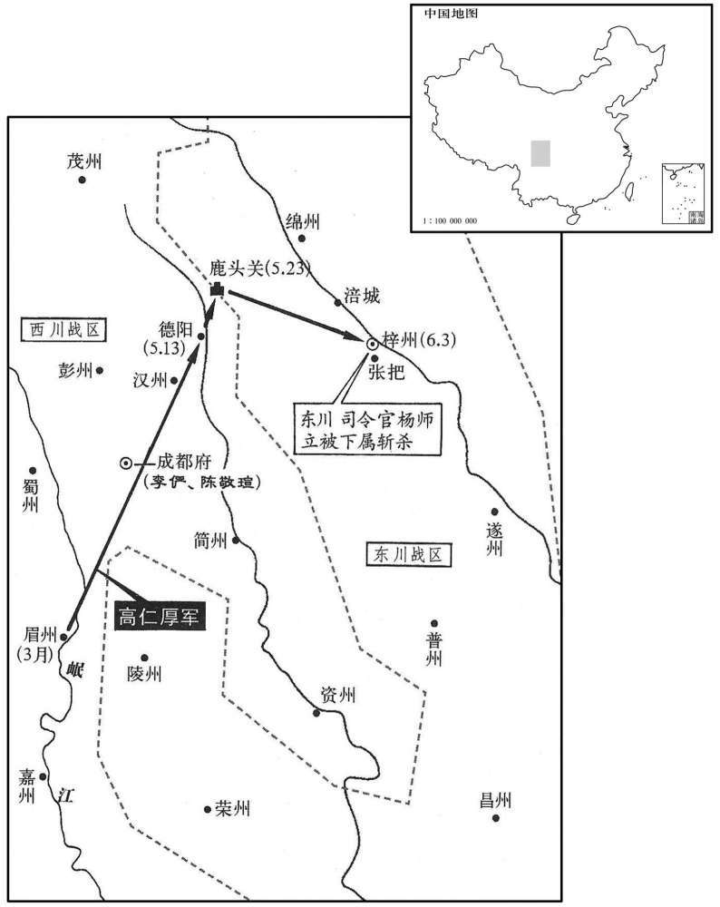
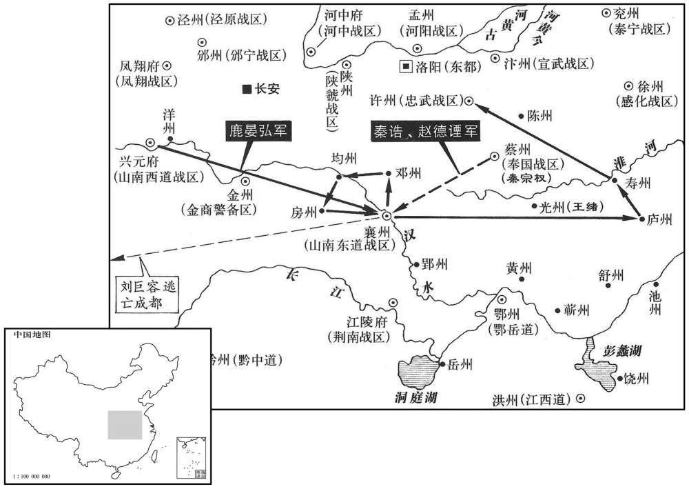
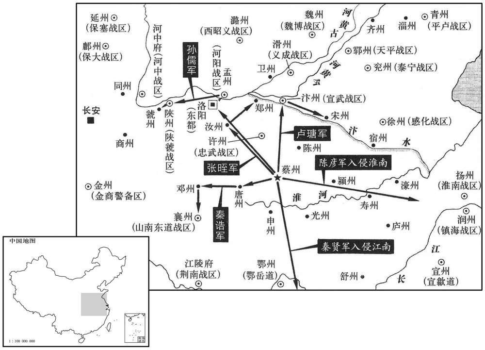
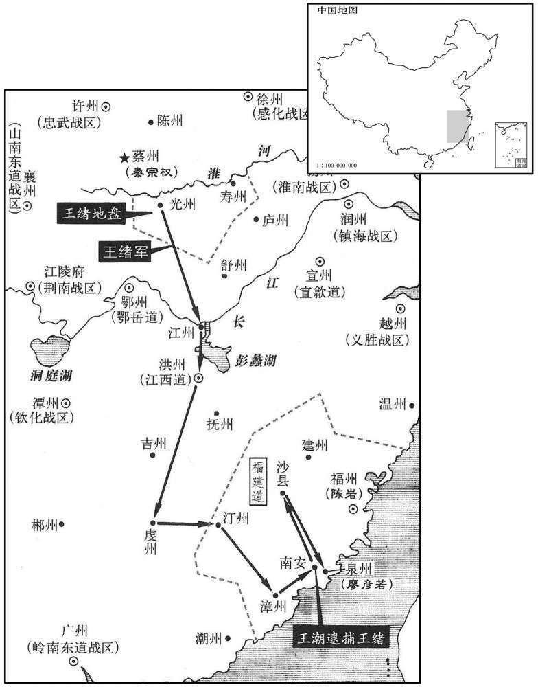
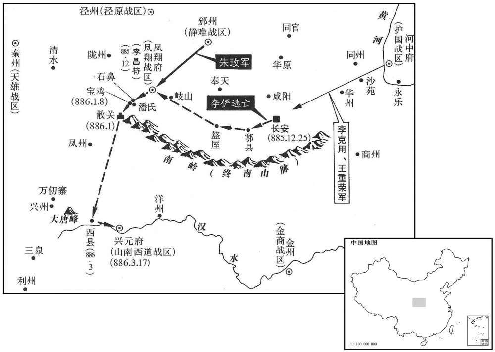

卷次与人物目录 / 卷256
资治通鉴 · 卷第二百五十六【唐纪七十二】
公元884年至公元887年 · 原文、白话与胡三省注
本页按胡注本编排保存全卷内容。白话采用本站所据译本，未可靠对应的内容另列说明；事件标题用于定位，并非原书文字。
本卷共128段原文，120段有译文对应，8段缺译或待核对。
卷第二百五十六【唐纪七十二】起阏逢执徐（甲辰）六月，尽强圉协洽（丁未）三月，凡二年有奇。
卷首原文与注释
僖宗惠圣恭定孝皇帝下之上
公元884年 · 唐僖宗惠圣恭定孝皇帝中和四年
中和四年〔（甲辰﹑八八四）〕
上传原文的注释括号有异常，字符原样保留；无法可靠划分的段落默认全文显示。
本年记事分属相邻卷，按原书顺序分别保留：第255卷 · 第256卷。
本年事件索引（现代整理）
- 高仁厚围梓州，郑君雄杀杨师立献城投降
- 李师悦等追击黄巢至瑕丘，林言斩首后首级被沙陀夺走
- 秦宗权侵扰邻镇，朱瑄援助朱全忠后结为兄弟
- 时溥献黄巢首级及家属，黄巢姬妾当面驳斥僖宗
- 朱全忠击败秦宗权
- 李克用诉朱全忠袭击谋害，僖宗只遣使劝和
- 李克用兼领麟州并荐弟克修镇昭义，进封陇西郡王
- 朱全忠加同平章事
- 王徽招抚百姓修复长安，关东藩镇请车驾还京
- 王铎见朱全忠渐骄，请求离镇，改任义昌节度使
- 王建等投奔行在，鹿晏弘弃兴元出逃
- 曹知悳据嵯峨山抗贼，被田令孜密令王行瑜杀害
- 鹿晏弘攻陷襄州并据许州，刘巨容奔成都
- 陈敬瑄请辞三川都指挥、招讨等职
- 陈岩击败泉州叛军，接任福建观察使
- 王铎途经魏博遭乐从训伏杀，随行三百余人被劫
- 邠宁军改号静难军
- 陈晟逐睦州刺史，王敬荛逐颍州刺史，朝廷授二人刺史
- 冯行袭诱孙喜渡江，斩杀群盗并打通蜀道
- 李昌言病卒，李昌符接任凤翔节度使
- 秦宗权兵分多路劫掠周边州镇，残暴过于黄巢
六月，壬辰，东川留后高仁厚奏郑君雄斩杨师立出降。仁厚围梓州久不下，乃为书射城中，道其将士曰：「仁厚不忍城中玉石俱焚，为诸君缓师十日，〔射，而亦翻。道，读曰导。为，于伪翻。〕使诸君自成其功。若十日不送师立首，当分见兵为五番，〔见，贤遍翻。〕番分昼夜以攻之，于此甚逸，于彼必困矣。五日不下，四面俱进，克之必矣。诸君图之！」数日，君雄大呼于众曰：〔呼，火故翻。〕「天子所诛者元恶耳，他人无预也。」众呼万岁，大噪，突入府中，师立自杀，君雄挈其首出降。〔考异曰：张糀耆旧传：「四年，七月一日，高仆射羽檄入城云云，师立自杀。七月三日，张﹑郑二将持师立首级出降。七月七日，高仆射上东川。」句延庆传曰：三年，五月，高公进军东川城中，飞檄入城，师立自刎。七月辛酉，师立首级至成都。」实录：「六月丙申，高仁厚奏东川都将郑君雄枭斩杨师立，传首于行在。是日，诏以仁厚为东川节度使。」续宝运录：「二月，梓州观察使杨师立反，敕差蜀将高仁厚等讨平。六月三日，收得梓州并杨师立首级至驾前。」新纪：「七月辛酉，杨师立伏诛。」今日从续宝运录，事从实录。〕仁厚献其首及妻子于行在，陈敬瑄钉其子于城北，〔钉，丁定翻。〕敬瑄三子出观之，钉者呼曰：〔呼，火故翻。〕兹事行及汝曹，汝曹于后努力领取！」三子走马而返。以高仁厚为东川节度使。
六月，壬辰（初三），东川留后高仁厚上奏说郑君雄斩杀杨师立出来投降。高仁厚围攻梓州城好长时间拿不下来，于是写了一封信用箭射入城中，对城内的将领士卒说：“高仁厚不忍心看到城内良莠不分都遭杀戮，暂缓进攻十天，让你们自己完成这一功业。如果十天内不送出杨师立的脑袋，就要把这些官兵分为五番，分番别在白天和黑夜轮流攻打，这样对于我们是很安逸的，对于你们则一定是疲困不堪。五天若还没有攻打下来，就从四面八方一同进攻，一定会攻克的。你们考虑吧！”过了几天，郑君雄对众人大声疾呼说：“天子所要杀戮的是罪魁祸首，与别的人没有关系。”大家高喊万岁，嚷嚷吵吵，冲进府第，杨师立自杀身亡，郑君雄提着杨师立的头出来投降。高仁厚将杨师立的头和他的妻子儿女送到唐僖宗那里，陈敬下令把杨师立的儿子钉死在城的北面，陈敬的三个儿子出去观看这场景，被钉的人大叫：“这种事也会轮到你们，你们以后等着努力领取吧！”陈敬的三个儿子骑上马逃了回去。朝廷任命高仁厚为东川节度使。

甲辰，武灵将李师悦与尚让追黄巢至瑕丘，败之。〔宋白曰：春秋以邾子益来，囚诸负瑕。杜预注云：鲁邑也，高平郡南平阳县西北有瑕丘城，汉为瑕丘县。败，补迈翻。〕巢众殆尽，走至狼虎谷，〔狼虎谷，在泰山东南莱芜界。〕丙午，巢甥林言斩巢兄弟妻子首，将诣时溥；遇沙陀博野军，夺之，并斩言首以献于溥。〔黄巢干符三年起兵为盗，至是凡十年而灭。考异曰：续宝运录曰：「尚让降徐州，黄巢走至碣山，路被诸军趁逼甚，乃谓外甥朱彦之云云。外甥再三不忍下手，黄巢乃自刎过与外甥。外甥将至，路被沙陀博野夺却，兼外甥首级一时送都统军中。」旧纪：「七月，癸酉，贼将林言斩黄巢﹑黄揆﹑黄秉三人首级降。」旧传：「巢入泰山，徐帅时溥遣将张友与尚让之众掩捕之。至狼虎谷，巢将林言斩巢及二弟邺﹑揆等七人首并妻子函送徐州。」新纪：「七月壬午，黄巢伏诛。」新传：「巢计蹙，谓林言曰：『汝取吾首献天子，可得富贵，毋为他人利。』言，巢甥也，不忍。巢乃自刎，不诛，言因斩之，函首将诣时溥，而太原博野军杀言与巢首俱上。」今从新传。
本段缺少可靠对应白话，原文完整保留；未使用生成译文。
蔡州节度使秦宗权纵兵四出，侵噬邻道；天平节度使朱瑄，有众三万，从父弟瑾，勇冠军中。〔瑄，荀缘翻，当作「宣」。瑾，渠吝翻。冠，古玩翻。〕宣武节度使朱全忠为宗权所攻，势甚窘，〔窘，渠陨翻。〕求救于瑄，瑄遣瑾将兵救之，败宗权于合乡。〔败，补迈翻。〕全忠德之，与瑄约为兄弟。〔朱全忠反复小人也，兵势单弱，则与朱瑄为兄弟，兵势既强，则反眼为仇敌，必诛屠以快其志而后已，如斯人可与共功名哉！
两版字句有差异，建议核对原文。
蔡州节度使秦宗权放纵士兵四处出击，侵犯邻近各道；天平节度使朱，有人马三万，堂弟朱瑾，勇猛过人，在军营中可称第一。宣武节度使朱全忠受到秦宗权的进攻，处境十分紧迫，向朱求救，朱派遣朱瑾带领军队前往救援，在合乡打败了秦宗权。朱全忠很感激他，与朱结为兄弟。
秋，七月，壬午，时溥遣使献黄巢及家人首并姬妾，上御大玄楼受之。〔大玄楼，成都罗城正南门楼。高骈之筑成都罗城，既讫功，以周易筮之，得大畜。骈曰：「畜者，养也。济以刚健笃实，辉光日新，吉孰大焉！文宜去下存上。」因名大玄城。〕宣问姬妾：「汝曹皆勋贵子女，世受国恩，何为从贼﹖」其居首者对曰：「狂贼凶逆，国家以百万之众，失守宗祧，播迁巴﹑蜀；〔祧，他雕翻。〕今陛下以不能拒贼责一女子，置公卿将帅于何地乎！」上不复问，皆戮之于市。〔复，扶又翻。〕人争与之酒，其余皆悲怖昏醉，居首者独不饮不泣，至于就刑，神色肃然。〔考异曰：张糀耆旧传：「中和三年，五月二十日，北路军前进到黄巢首级﹑妻﹑男。」今不取其年月而取其事。〕
秋季，七月，壬午（二十四日），时溥派遣使臣进献黄巢和他家人的头颅以及他的众妾，唐僖宗亲临成都大玄楼接受进献。僖宗向黄巢的众妾问话：“你们都是显贵人家的子女，世代接受国家的恩惠，为什么要跟随贼寇呀？”站在前面的一位回答说：“贼寇逞凶作乱，大唐有百万军队，却不能固守祖庙，流落到巴蜀一带，今天陛下责备一个女子不能抗拒贼寇，那么朝中的王公大臣将军统帅们又怎么说呢！”僖宗不再问话，下令全部在集市杀掉。人们争着给黄巢的众妾送酒，其余的人都悲痛恐惧昏昏沉沉地喝醉了，唯独站在前面的那位既不饮酒也不哭泣，到了处刑的时候，神态脸色肃穆坦然。
朱全忠击秦宗权，败宗权于冢水。〔败，补迈翻。〕
朱全忠攻击秦宗权，在水将他打败。
李克用至晋阳，大治甲兵，〔治，直之翻。〕遣榆次镇鴈门李承嗣奉表诣行在，自陈「有破黄巢大功，为朱全忠所图，仅能在免，将佐已下从行者三百余人，并牌印皆没不返。〔古者授官赐印绶，常佩之于身，至解官则解印绶。至唐始置职印，任其职者，传而用之。其印盛之以匣，当官者寘之卧内，别为一牌，使吏掌之，以谨出入，印出而牌入，牌出则印入，故谓之牌印。〕全忠仍牓东都﹑陜﹑孟，云臣已死，行营兵溃，令所在邀遮屠翦，勿令漏失，将士皆号泣冤诉，〔号，户刀翻。〕请复仇雠。臣以朝廷至公，当俟诏命，拊循抑止，复归本道。乞遣使按问，发兵诛讨，臣遣弟克勤将万骑在河中俟命。」时朝廷以大寇初平，方务姑息，得克用表，大恐，但遣中使赐优诏和解之。克用前后凡八表，称：「全忠勡功疾能，阴狡祸贼，异日必为国患。惟乞下诏削其官爵，臣自帅本道兵讨之，不用度支粮饷。」〔唐旧制，诸镇兵出境征讨，皆仰给度支。帅，读曰率。〕上累遣杨复恭等谕指，称：「吾深知卿冤，方事之殷，〔杜预曰：殷，盛也。余谓殷，众也，言方事之众多也。〕姑存大体。」克用终郁郁不平。时藩镇相攻者，朝廷不复为之辩曲直。〔复，扶又翻。为，于伪翻。〕由是互相吞噬，惟力是视，皆无所禀畏矣！
李克用到达晋阳，大规模地修整盔甲武器，派遣镇守榆次的将军雁门人李承嗣恭奉表文到唐僖宗那里，部陈述道：“李克用有打败黄巢的大功劳，却中了朱全忠的阴谋圈套，仅是免于一死，身边的将领辅佐官员之下跟随的三百余人，和朝廷授给的牌印都全覆没。朱全忠还屡屡在东都、陕州、孟州张贴告示，说我已经死亡，军营中的人马溃散，他命令各地拦截阻击全部斩杀，不许漏网一个，为此军营中的将领和士兵都哭诉冤屈，请求报仇。我认为朝廷最为公正，应当等皇上颁发了诏命再行动，因此安抚手下人马遵循朝纲，制止了他们要擅自报仇的请求，又回到原来的营地。现在恳求皇上派遣使臣审查讯问这一事件，发兵讨伐朱全忠，我派弟弟李克勤带领一万骑兵在河中府等候命令。”当时朝廷认为黄巢大寇刚刚平灭，为政应当宽容一些，接到李克用的表文，大为吃惊，只是派遣宦官赐发褒嘉奖励李克用诏书，劝二人和解。李克用先后共八次进呈表文，说：“朱全忠妒忌他人的功劳和才能，是阴险狡诈的乱臣贼子，将来一定会成为国家的祸患。只皇上颁发诏令削去朱全忠的官职和爵位，我亲自率领本道官兵对他进行讨伐，不用朝廷支给粮食和兵饷。”唐僖宗几次派遣杨复恭等人向李克用传达谕令，说：“我深知你的冤屈，可是现在事务繁多，你姑且以大局为重吧。”对此李克用一直愤懑不平。当时对各藩镇的相互攻打，朝廷不再为他们明辨谁是谁非。由于这样，各藩镇尽管互相侵吞，只看实力，都没有什么因禀告朝廷而畏惧的了。
八月，李克用奏请割麟州隶河东，〔麟州，本属振武节度。考异曰：新方镇表：「中和二年，河东节度增领麟州。」误也。今从唐末见闻录。〕又请以弟兄克修为昭义节度使，皆许之。由是昭义分为二镇。〔泽﹑潞为一镇，邢﹑洛﹑磁为一镇。〕进克用爵陇西郡王。克用奏罢云蔚防御使，依旧隶河东，〔武宗会昌三年，分河东云﹑蔚﹑朔三州置大同军都团练使，次年，升为都防御使。〕从之。
八月，李克用上奏请求朝廷把麟州割让隶属河东节度使管辖，又请求任命他的弟弟李克为昭义节度使，朝廷都准许了他。从此，昭义分成了两个镇。朝廷还为李克用晋升爵位为陇西郡王。李克用奏请裁撤云蔚防御使，云州、蔚州、朔州仍隶属河东节度使管辖，朝廷也依从了他。
九月，己未，加朱全忠同平章事。
九月，己未（初二），朝廷加封朱全忠为同平章事。
以右仆射﹑大明宫留守王徽知京兆尹事。上以长安宫室焚毁，故久留蜀未归。徽招抚流散，户口稍归，复缮治宫室，百司粗有绪。〔治，直之翻。粗，坐五翻。〕冬，十月，关东藩镇表请车驾还京师。
朝廷任命右仆射、大明宫留守王徽为知京兆尹牧事。唐僖宗因为长安宫殿被黄巢烧毁，所以长期留在蜀地而没回去。王徽招抚流散的百姓，长安的居民稍微回来一些，又修缮治理宫室，各官署粗略地有了些头绪。冬季，十月，关东的藩镇进呈表文请求唐僖宗回京师长安。
朱全忠之降也，义成节度使王铎为都统，承制除官。〔事见上卷二年。降，户江翻。〕全忠初镇大梁，事铎礼甚恭，铎依以为援。〔汴﹑滑邻道，而铎于全忠有恩，故欲依以为援。〕而全忠兵浸强，益骄倨，铎知不足恃，表请还朝，〔朝，直遥翻。〕徙铎为义昌节度使。
朱全忠投降的时候，义成节度使王铎是都统，受命为朱全忠封官授职。起初朱全忠镇守大梁，侍奉王铎礼节十分恭谦，王铎依赖朱仓忠为援。随着朱全忠人马的渐渐强大，他越来越骄横傲慢，王铎知道朱全忠这人靠不住，便进呈表文请求回到朝廷任职，朝廷于是将王铎调任义昌节度使。
鹿晏弘之去河中，王建﹑韩建﹑张造﹑晋晖﹑李师泰各帅其众与之俱；〔见上卷本年。帅，读曰率。〕及据兴元，以建等为巡内刺史，不遣之官。晏弘猜忌，众心不附，王建﹑韩建素相亲善，晏弘尤忌之，数引入卧内，〔数，所角翻。〕待之加厚，二建相谓曰：「仆射甘言厚意，疑我也，祸将至矣！」田令孜密遣人以厚利诱之，十一月，二建与张造﹑晋晖﹑李师泰帅众数千逃奔行在，〔诱，音酉。考异曰：实录：「九月，山南西道节度使鹿晏弘为禁军所讨，弃城奔许州。晏弘大将韩建﹑王建﹑张造﹑晋晖﹑李师泰各帅本军降。田令孜以建等杨复光故将，薄其赏，皆除诸卫将军。十一月戊午朔，建等以军三千至行在，田令孜录为假子，统以旧军，号随驾五都。」按建等既降，始遣禁军讨晏弘。实录云九月晏弘弃城去，太早。十一月又云建等降，重复。上云赏薄，下云为假子，自相违。新传：「帝还，晏弘惧见讨，引兵走许州。王建帅义勇四军迎帝西县。」按帝尚在成都，云迎帝西县，亦误也。今月从实录，事从薛居正五代史王建﹑韩建传。〕令孜皆养为假子，赐与巨万，拜诸卫将军，使各将其众，号随驾五都。〔田令孜先已募新军五十四都分隶两神策军，今得王建﹑韩建﹑张造﹑晋晖﹑李师泰五将之兵，不敢分其众隶两军，别号随驾五都。〕又遣禁兵讨晏弘，晏弘弃〔【章：十二行本「弃」上有「率众」二字；乙十一行本同；张校同。】〕兴元走。〔鹿晏弘得兴元，未期年而弃之。〕
鹿晏弘离开河中时，王建、韩建、张造、晋晖、李师泰分别率领所部人马与他一同前去，等到占据了兴元，便任命王建等人为巡内剌史，但没有派遣他们赴任。鹿晏弘猜疑各将领不再真心依附，王建、韩建二人平时相互亲近友善，鹿晏弘尤为忌恨，多次把他俩带进内室，以很厚的礼节款待他们，王建、韩建相互说：“鹿仆射以好言美意招侍我们，是在怀疑我们，大祸快要降临了。”田令孜秘密派人以丰厚利益去引诱王建等人。十一月，王建、韩建与张造、晋晖、李师泰率领几千人马逃奔到成都唐僖宗那里，田令孜把他们都收养为义子，赏赐给他们大量钱财，封他们为各卫将军，让他们分别带领自己的人马，号称随驾五都。朝廷又派遣禁卫军讨伐鹿晏弘，鹿晏弘放弃兴元城逃跑。
初，宦者曹知悳，本华原富家子，有胆略。黄巢陷长安，知悳归乡里，集壮士，据嵯峨山南，为堡自固，〔嵯峨山在京兆云阳县北十五里。〕巢党不敢近。〔近，其靳翻。〕知悳数遣壮士变衣服语言，效巢党，夜入长安攻贼营，〔数，所角翻。〕贼惊以为鬼神；又疑其下有叛者，由是心不自安。朝廷闻而嘉之，就除内常侍，赐金紫。知悳闻车驾将还，谓人曰：「吾施小术，使诸军得成大功，〔曹知悳自言贼众病于己之宵攻，已无固志，诸镇大军临之，因得成收复京城之功。〕从驾群臣但平步往来，俟至大散关，当阅其可归者纳之。」〔从，才用翻。〕行在闻之，恐其为变；田令孜尤恶之，〔恶，乌路翻。〕密以敕旨谕邠宁节度使王行瑜，使诛之，〔按光启二年，王行瑜斩朱玫，三年，始命为邠宁节度使，此时盖为邠宁将也。〕行瑜潜师自嵯峨山北乘高攻之，知悳不为备，举营尽殪。令孜益骄横，禁制天子，不得有所主断。上患其专，时语左右而流涕。〔殪，壹计翻。横，户孟翻。断，丁乱翻。语，牛倨翻。〕
当初，宦官曹知悫，本来是华原富贵人家的儿子，有勇气和智谋。黄巢攻陷长安后，曹知悫回到故乡，招集强壮勇士，占据嵯峨山南部，建筑营垒固守，黄巢的人马不敢接近。曹知悫多次派遣招集的强壮勇士变换衣服和言语，仿效黄巢手下的人，夜间进入长安攻打贼寇军营，贼寇惊恐万状以为是鬼神作怪。黄巢又怀疑手下人有叛变的，因此心神不定。朝廷得知这一情况特地嘉奖曹知悫，授给他内常侍官职，赐给金印紫绶。曹知悫听说唐僖宗要回京师长安，对人讲：“我略施小说，使各路官军取得了收复长安的大功，那些跟随皇上的百官只是轻松地来来往往，等到他们到达大散关，我要审视其中应该返回京师任职的人才能接纳。”这话传到僖宗那里，朝廷担心曹知悫会发动变乱。田令孜尤其仇视曹知悫，便暗中假借僖宗的旨意谕令宁节度使王行瑜，让他将曹知悫杀掉，王行瑜秘密派出军队从嵯峨山的北面登上高处发起进攻，曹知悫没有任何准备，全部人马都被杀死。田令孜更加骄横起来，控制皇上，使僖宗不能主断事务。僖宗厌恨田令孜的专权，经常向身边的人谈起这事而痛哭流涕。
鹿晏弘引兵东出襄州，秦宗权遣其将秦诰﹑赵德諲将兵会之，〔諲，伊真翻。〕共攻襄州，陷之；山南东道节度使刘巨容奔成都。〔刘巨容不肯追灭黄巢，欲养寇以自资，自以襄阳为菟裘也，而地夺于赵德諲，身死于田令孜之手，玩寇而邀君，果何益哉！考异曰：实录：「光启元年四月，蔡贼攻陷襄州，刘巨容死焉。」新传：「晏弘引麾下东出襄﹑邓，宗权遣赵德諲合晏弘兵攻襄州，巨容不能守，奔成都。龙纪元年，田令孜杀之。」按晏弘中和四年十一月已据许州，又，巨容所以奔成都，以天子在蜀故也。今从新传。〕德諲，蔡州人也。晏弘引兵转掠襄﹑邓﹑均﹑房﹑庐﹑寿，复还许州；〔鹿晏弘自许州从杨复光勤王，见二百五十四卷中和元年。宋白曰：均州，汉武当县地，齐永明七年，于今郧乡县置齐兴郡，西魏置兴州，寻改丰州，周武成元年，自今郧乡城移延岑城，今郡理是也。隋改均州，因均水为名。〕忠武节度使周岌闻其至，弃镇走，晏弘遂据许州，〔考异曰：实录：「鹿晏弘陷许州，杀节度使周岌，据其镇。」又曰：「初，晏弘据有兴元，都将王建等帅众归行在，乃诏禁兵讨之。晏弘惧，弃城归乡里。周岌闻其至，遁去。晏弘自称留后，朝廷因以节旄命之。」始云「杀」，后云「遁去」，自相违，今从其后。〕自称留后，朝廷不能讨，因以为忠武节度使。
鹿晏弘带领军队往东出发奔向襄州，秦宗权派遣将领秦诰、赵德率领军队与鹿晏弘会合，共同攻陷襄州。山南东道节度使刘巨容逃奔成都。赵德是蔡州人。鹿晏弘带领人马，在襄州、邓州、均州、房州、庐州、寿州各州之间辗转抢掠，又回到许州。忠武节度使周岌听说鹿晏弘来到，放弃州城逃跑，鹿晏弘于是占据了许州，自称留后，朝廷难以对他进行讨伐，便任命他为忠武节度使。


十二月，己丑，陈敬瑄表辞三川都指挥﹑招讨﹑制置﹑安抚等使；从之。〔去年以杨师立举兵，敬瑄兼三川都指挥等使，师立既死，故辞之。
本段缺少可靠对应白话，原文完整保留；未使用生成译文。
初，黄巢转掠福建，〔见二百五十三卷干符五年。〕建州人陈岩聚众数千保乡里，号九龙军，福建观察使郑镒奏为团练副使。泉州刺史﹑左厢都虞候李连有罪，亡入溪洞，〔【章：十二行本「洞」下有「合众攻福州」五字；乙十一行本同；孔本同；张校同；退斋校同。】〕岩击败之。〔败，补迈翻。〕镒畏岩之逼，表岩自代，壬寅，以岩为福建观察使。岩为治有威惠，闽人安之。〔治，直吏翻。考异曰：实录：「七月，泉州刺史陈岩逐福建观察使郑镒，自知使务。」又曰：「十二月壬寅，以岩为福建观察使。岩既逐镒，逼镒荐己为代，朝廷因命之。」按岩既逐镒，则镒不在福州，岩安能逼之荐己！新王潮传亦曰：「黄巢将窃有福州，王师不能下，建人陈岩帅众拔之。又逐观察使郑镒，自领州，招即授刺史。」按刘恕闽录：「黄巢陷闽越，岩聚众千余人，号九龙军，福建观察使郑镒奏为团练副使。左厢都虞候李连骄慢不法，纵其徒为郡人患，岩将按诛之，连奔豁洞中，合众攻福州，岩击破之。镒表岩自代，拜观察使。」今从之。
本段缺少可靠对应白话，原文完整保留；未使用生成译文。
义昌节度使兼中书令王铎，厚于奉养，过魏州，侍妾成列，服御鲜华，如承平之态；魏博节度使乐彦祯之子从训，伏卒数百于漳南高鸡泊，围而杀之，及宾僚从者三百余人皆死，掠其资装侍妾而还。〔史言王铎以承平之态处乱世，至于丧身亡家，诲盗诲淫，自取之也。从，才用翻。还，从宜翻，又如字。〕彦祯奏云为盗所杀，朝廷不能诘。
义昌节度使兼中书令王铎，生活享受极其丰厚，当他经过魏州时，侍从众妾竟站成一排，穿着打扮鲜艳华丽，像天下太平时的样子。魏博节度使乐彦祯的儿子乐从训，在漳南鸡泊一带设下几百名伏兵，围攻并将王铎杀掉，连同王铎的宾客幕僚三百多人也都处死，然后掠抢王铎所带的行李侍妾回去。乐彦祯上奏说王铎被盗贼杀害，朝廷也未能查问。
赐邠宁军号曰静难。〔难，乃旦翻。〕
朝廷赐宁军名号为静难。
是岁，余杭镇使陈晟逐睦州刺史柳超，颍州都知兵马使汝阴王敬荛逐其刺史，〔汝阴，汉县，唐带颍州。荛，如招翻。〕各领州事，朝廷因命为刺史。
这一年，余杭镇使陈晟驱逐睦州剌史柳超，颍州都知兵马使汝阴人王敬荛赶走当地剌史，分别主持本州事宜，朝廷于是分别任命他们为睦州剌史、颍州剌史。
均州贼帅孙喜聚众数千人，谋攻州城，刺史吕烨不知所为。都将武当冯行袭伏兵江南，〔武当，汉县，唐带均州。江南，汉江之南也。帅，所类翻。将，即亮翻。〕自乘小舟迎喜，谓曰：「州人得良牧，无不归心，然公所从之卒太多，州人惧于剽掠，〔剽，匹妙翻。〕尚以为疑。不若置军江北，独与腹心轻骑俱进，行袭请为前道，〔道，读为导，一读如字。以请为前道告谕为一句，言先路告谕均州之人也。请为，于伪翻。〕告谕州人，无不服者矣。」喜以为然，从之；既渡江，军吏迎谒，伏兵发，行袭手击喜，斩之，从喜者皆死，〔从，才用翻。〕江北军望之俱溃。山南东道节度使上其功，〔上，时掌翻。考异曰：薛居正五代史行袭传曰：「洋州节度使葛佐奏辟为行军司马，请将兵镇谷口，通秦﹑蜀道，由是益知名。」新传曰：「行袭乘胜逐刺史吕烨，据均州，刘巨容因表为刺史。武定节度使杨守忠表为行军司马，使领兵搤谷口以通秦﹑蜀。」新纪：「光启元年，四月，武当贼冯行袭陷均州，逐刺史吕烨。」在刘巨容奔成都后。行袭传云巨容以功上言，误也。今从薛史。按若以薛史为据，当言洋州节度使上其功。〕诏以行袭为均州刺史。州西有长山，当襄﹑邓入蜀之道，群盗据之，抄掠贡赋，〔抄，楚交翻。〕行袭讨诛之，蜀道以通。
均州地方的贼寇头目孙喜召集几千人，筹划攻打均州城，剌史吕烨不知如何应付，都将武当人冯行袭在汉江南岸设下伏兵，自己乘坐小船过江迎接孙喜，对孙喜说：“均州城内的百姓得到象你这样贤良的长官，没有不归顺的，可是跟随你的兵卒太多了，均州城内的人害怕抢劫，尚且对你有疑心。你不如把人马放在江北，单独与左右亲信轻装过江，我冯行袭请求在前面为你开道，告诉均州城内的人，那么就没有人不顺服你的人了。”陈喜认为这样不错，便听从冯行袭的安排。不久，孙喜渡过汉江，军中官吏前来迎接拜见，原来设下的伏兵突然发起进攻，冯行袭亲手与孙喜搏头，将孙喜斩杀，跟随孙喜过来的人也都被杀死，江北面孙喜的人马看到这种情况都溃散了。山南东道节度使上疏奏报冯行袭的功劳，唐僖宗颁诏任命冯行袭为均州剌史。均州西面有座长山，正对着从襄州、邓州进入蜀地的交通要道，不少盗贼占据长山，掠抢送往成都的贡品赋税，冯行袭消灭了长山的盗贼，使去往蜀地的道路得以通行。
凤翔节度使李昌言病，表弟昌符知留后。昌言薨，制以昌符为凤翔节度使。〔考异曰：诸书皆无昌言卒年月，惟实录于李昌符传中云：「李昌言病，请昌符权留后，昌言死，诏除节度使。」按实录，中和三年五月，昌言加检校司徒，光启元年二月，昌符始见。故以昌言薨附于中和四年之末。
本段缺少可靠对应白话，原文完整保留；未使用生成译文。
时黄巢虽平，秦宗权复炽，〔复，扶又翻。〕命将出兵，寇掠邻道，陈彦侵淮南，秦贤侵江南，秦诰陷襄﹑唐﹑邓，孙儒陷东都﹑孟﹑陜﹑虢，张晊陷汝﹑郑，卢瑭攻汴﹑宋，〔自孙儒以下，事皆在是年之后，史概言之。〕所至屠翦焚荡，殆无孑遗。〔晊，之日翻。孑，吉列翻。毛苌曰：孑遗，孑然遗失也。按孑，单也，孤也。无孑遗者，言无孤单之遗余也。〕其残暴又甚于巢，军行未始转粮，车载盐尸以从。〔以死人尸实之以盐，以供军粮。从，才用翻。〕北至卫﹑滑，西及关辅，东尽青﹑齐，南出江﹑淮，州镇存者仅保一城，极目千里，无复烟火。上将还长安，畏宗权为患。
当时黄巢虽已消灭，可是秦宗权又兴起作乱，命令各将领派出军队，抢掠邻近各道，陈彦进攻淮南，秦贤进攻江南，秦诰攻克襄州、唐州、邓州，孙儒攻克东都、孟州、陕州、虢州，张攻克汝州、郑州，卢瑭攻打汴州、宋州，所到之处烧杀抢掠，无人能免，其残暴程度比黄巢更为厉害。军队出征未来得及转运粮食，竟把盐腌的死尸装在车上随军出发。北面到卫州、滑州，西及关辅，东面包括青州、齐州，南面直达江、淮以远，上此范围内州镇得以保存的仅有一城，千里远望，也见不到烟火。唐僖宗将要返回长安，又害怕秦宗权作乱危害。
译本中未与胡注本可靠对应的内容
以下另列供核对版本差异，不并入胡注本正文。
译本所附古文
[2]甲辰，武宁将李师悦与尚让追黄巢至瑕丘，败之。巢众殆尽，走至狼虎谷，丙午，巢甥林言斩巢兄弟妻子首，将诣时溥；遇沙陀博野军，夺之，并斩言首以献于溥。
译本白话
甲辰（十五日），武宁将军李师悦和尚让追击黄巢到瑕丘，打败黄巢。黄巢的人马没剩下多少，逃到泰山东南部的狼虎谷。丙午（十七日），黄巢的外甥林言斩下黄巢和黄巢的兄弟、妻子的头颅，正要拿着送到时溥那里，遇上了沙陀人博野军，将黄巢等人的头颅夺去，并且砍下林言的脑袋，一同献给了时溥。
译本所附古文
[14]十二月，己丑，陈敬表辞三川都指挥、招讨、制置、安抚等使；从之。
译本白话
十二月，己丑（初三），陈敬具呈表章请求辞去三川都指挥、招讨、制置、安抚等官职、朝廷依从。
译本所附古文
[15]初，黄巢转掠福建，建州人陈岩聚众数千保乡里，号九龙军，福建观察使郑镒奏为团练副使。泉州剌史、左厢都虞候李连有罪，亡入溪洞，岩击败之。镒畏岩之逼，表岩自代，壬寅，以岩为福建观察使。岩为治有威惠，闽人安之。
译本白话
当初，黄巢辗转掠侵福建时，建州人陈岩招集了几千人保卫家乡，号称九龙军，福建观察使郑镒奏请，朝廷，任命陈岩为团练副使。泉州剌史、左厢都虞候李连犯了罪，逃入河间石洞，陈岩将李连打败。郑镒害怕陈岩威逼自己，便上表请让陈岩代替自己，壬寅（十六日），朝廷任命陈岩为福建观察使。陈岩治理地方恩威并用，福建民人都较安定。
译本所附古文
[20]凤翔节度使李昌言病，表弟昌符知留后。昌言薨，制以昌符为凤翔节度使。
译本白话
凤翔节度使李昌言患病，进表请让他的弟弟李昌符主管留后事宜。李昌言死去，唐僖宗便颁诏任命李昌符为凤翔节度使。
公元885年 · 唐僖宗惠圣恭定孝皇帝光启元年
光启元年〔（乙巳﹑八八五）是年三月改元。〕
上传原文的注释括号有异常，字符原样保留；无法可靠划分的段落默认全文显示。
本年事件索引（现代整理）
- 僖宗诏令招抚秦宗权
- 僖宗车驾离开成都
- 荆南忠勇军横暴，陈儒谋除之而程君从率众逃往朗州
- 雷满屡寇荆南，张濬、韩师德逐陈儒而据荆南
- 张濬杀朱敬玫，成汭夺据归州
- 卢光稠攻陷虔州，自称刺史
- 秦宗权攻光州，王绪率军南逃并攻陷汀、漳二州
- 朱全忠在焦夷击败秦宗权
- 僖宗抵凤翔后回到长安，见宫城荒废并改元
- 秦宗权称帝设置百官，朝廷命时溥统兵讨伐
- 卢龙、成德合谋攻义武并诱赫连铎攻李克用，王处存求援
- 秦宗权遣弟秦宗言进犯荆南
- 田令孜扩充神策军并夺盐利供军，与王重荣冲突后调换藩镇
- 刘仁恭掘地道攻易州，李克用破成德军，王处存夺回易州
- 王重盈加同平章事
- 李全忠丧师后袭取幽州，李可举自焚，全忠任留后
- 李罕之弃守东都，孙儒攻陷洛阳
- 李全忠任卢龙留后
- 常浚谏僖宗姑息藩镇，被贬后赐死
- 沧州军乱逐杨全玫，卢彦威任德州刺史
- 孙儒焚毁洛阳宫室官寺后撤走，李罕之复据东都
- 王重荣拒绝调镇兖州并指责田令孜，王处存亦抗命
- 马爽举兵威胁孟方立杀奚忠信，兵众溃散后被杀
- 秦宗权攻陷二十余州，赵犨抵抗获授蔡州节度使
- 王绪强令军士舍弃老弱，王潮兄弟护母而遭责斥
- 王绪因望气屠杀将士，王潮设计擒获王绪
- 王潮沿途秋毫无犯，泉州乡老挽留后围攻泉州
- 陈敬瑄兼管三川及峡内诸州
- 荆南将赵匡谋救陈儒未遂，被张濬杀害
- 秦宗权在八角镇击败朱全忠
- 李克用告称将讨朱玫、李昌符及朱全忠
- 朱玫嫁祸李克用并围攻王重荣，李克用援助击败朱玫、李昌符，僖宗出逃凤翔
- 长安宫室府寺民居再遭乱兵焚掠
- 河中军获赐护国军号
春，正月，戊午，下诏招抚之。
春季，正月，戊午（初二），唐僖宗颁发诏令招抚秦宗权。
己卯，车驾发成都，陈敬瑄送至汉州而还。
已卯（十九日），唐僖宗从成都出发，陈敬将皇帝送到汉州才回去。
荆南监军朱敬玫所募忠勇军暴横，〔【章：十二行本「横」下有「节度使」三字；乙十一行本同；退斋校同。】〕陈儒患之。郑绍业之镇荆南也，〔广明元年，朱敬玫募忠勇军；郑绍业镇荆南，亦是年也。事并见上卷。横，户孟翻。〕遣大将申屠琮将兵五千击黄巢于长安；军还，儒告琮，使除之。忠勇将程君从闻之，帅其众奔朗州，〔奔雷满也。帅，读曰率。〕琮追击之，杀百余人，〔【章：十二行本「人」下有「余众皆溃」四字；乙十一行本同；退斋校同；孔本有「皆溃」二字，无「余众」二字。】〕自是琮复专军政。〔复，扶又翻。〕
荆南监军朱敬玫招募来的忠勇军残暴横行，节度使陈儒很是担忧。郑绍业镇守荆南，派遣大将申屠琮带领军队五千到长安攻打黄巢；军队回来，陈儒告诉申屠琮忠勇军的暴行，让申屠琮消灭它。忠勇军将领程君从得知，便率领人马奔往朗州，中屠琮追击攻打忠勇军，斩杀一百多人，此后申屠琮又独自掌管军政大权。
雷满屡攻掠荆南，儒重赂以却之。淮南将张緕﹑韩师德叛高骈，据复﹑岳二州，自称刺史，儒请緕摄行军司马，师德摄节度副使，将兵击雷满。师德引兵上峡大掠，〔上，时掌翻。峡，巫峡也。〕归于岳州；緕还兵逐儒而代之。儒将奔行在，緕劫还，囚之。〔中和二年，陈儒代郑绍业，至是而败。〕緕，渭〔【严：「渭」改「滑」。】〕州人，性贪暴，荆南旧将夷灭殆尽。
雷满多次攻打抢掠荆南，陈儒用丰厚的资财贿赂让他退兵。淮南将领张、韩师德背叛高骈，分别占据复州、岳州，自称刺史，陈儒请张暂为行军司马，韩师德暂为节度副使，带领军队攻打雷满。韩师德率领军队到巫峡一带大肆抢掠，回到岳州；张率军回去驱逐陈儒而取代了他。陈儒要逃奔唐僖宗那里，被张挟持回去，囚禁起来。张是滑州人，性情贪婪暴虐，荆南地方的旧有将领几乎全被他杀光了。
先是，朱敬玫屡杀大将及富商以致富，〔先，悉荐翻。〕朝廷遣中使杨玄晦代之。敬玫留居荆南，尝曝衣，緕见而欲之，遣卒夜攻之，杀敬玫，尽取其财。緕恶牙将郭禹慓悍，〔恶，乌路翻。慓，匹妙翻。悍，下罕翻，又侯旰翻。〕欲杀之，禹结党千人亡去，庚申，袭归州，据之，自称刺史。禹，青州人成汭也，因杀人亡命，更其姓名。〔禹先为盗，诣陈儒降，以为将。更，工衡翻。按薛史，成汭少年任侠，乘醉杀人，为雠家所捕，因落发为僧，冒姓郭氏。〕
在这之前，朱敬玫多次屠杀军中大将和富商，霸占他们的资财使自己富有，朝廷派遣宦官杨玄晦去取代了他。朱敬玫留居荆南，他曾经晾晒衣服，被张看到而产生了贪欲，便派遣军队夜间前去攻打，杀掉朱敬玫，把财物全部抢去。张很忌恨牙将郭禹的勇悍，想杀害他，郭禹联合党羽一千人逃离。庚申（初四），郭禹攻占归州，予以占据，自称刺史。郭禹本来是青州人叫成，因为杀人逃亡，更改了姓名。
南康贼帅卢光稠陷虔州，自称刺史，以其里人谭全播为谋主。〔南康，汉南野县地，吴分南野置南安县，晋改为南康，唐属虔州。九域志，在州西八十里。考异曰：欧阳修五代史曰：「卢光稠﹑谭全播皆南康人。光稠状貌雄伟，无他材能，而全播勇敢有识略，然全播常奇光稠为人。唐末群盗起，全播聚众，立光稠为帅。是时王潮攻陷岭南，全播攻潮，取其虔﹑韶二州。」十国纪年：「全播推光稠为之谋主，所向克捷，光启初，据虔州，光稠自称刺史。天复中，陷韶州，光稠使其子延昌守之。」按新纪，光启元年正月，光稠陷虔州，天复二年，陷韶州。欧阳修以为同时取虔﹑韶二州，误也，今从新纪。〕
南康贼寇头目卢光稠攻克虔州，自称刺史，用他的同乡谭全播为主谋。
秦宗权责租赋于光州刺史王绪，绪不能给；宗权怒，发兵击之。绪惧，悉举光﹑寿兵五千人，驱吏民渡江，以刘行全为前锋，转掠江﹑洪﹑虔州，是月，陷汀﹑漳二州，然皆不能守也。〔王绪之兵自此入闽，为王潮兄弟割据之资。〕
秦宗权责令光州刺史王绪提供田租赋税，王绪不能供给；秦宗权大为震怒，发兵攻打王绪。王绪恐惧，调动光州、寿州全部军队五千人，驱赶这里的百姓过江，任命刘行全为前锋，辗转抢掠江州、洪州、虔州，这个月，又攻克了汀州、漳州，但都不能固守。
秦宗权寇颍﹑亳，朱全忠败之于焦夷。〔焦夷在亳州城父县界。按薛史梁纪，龙德元年，改亳州焦夷县为夷父。则焦夷时已为县。败，补迈翻。「夷父」，当作「城父」。
本段缺少可靠对应白话，原文完整保留；未使用生成译文。
二月，丙申，车驾至凤翔。三月，丁卯，至京师；荆棘满城，狐兔纵横，〔纵，子容翻。〕上凄然不乐。〔乐，音洛。〕己巳，赦天下，改元。〔改元光启。〕时朝廷号令所行，惟河西﹑山南﹑剑南﹑岭南数十州而已。
二月，丙申（初十），唐僖宗到达凤翔。三月，丁卯（十二日），唐僖宗回到京师。长安城内到处野草丛生，狐狸野兔四下乱跑，唐僖宗悲伤难过，闷闷不乐。已巳（十四日），唐僖宗下诏赦免犯人，改用光启年号。当时，朝廷号令能够达到的，只有河西、山南、剑南、岭南的几十个州罢了。
秦宗权称帝，置百官，〔考异曰：旧宗权传，但云巢贼既诛，僭称帝号。实录：「明年十月，襄王即位，宗权已称帝。不从。」新﹑旧纪皆无之，不知宗权以何年月称帝，今因时溥为都统书之。〕诏以武宁节度使时溥为蔡州四面行营兵马都统以讨之。
秦宗权自称皇帝，设置百官。朝廷下诏命令武宁节度使时溥任蔡州四面行营兵马都统讨伐秦宗权。
卢龙节度使李可举﹑成德节度使王镕恶李克用之强，〔恶，乌路翻。考异曰：太祖纪年录﹑薛居正五代史作「王景崇」，误也，今从旧纪。〕而义武节度使王处存与克用亲善，为侄邺娶克用女。〔为，于伪翻。〕又，河北诸镇，惟义武尚属朝廷，可举等恐其窥伺山东，〔此山东，谓恒山以东。伺，相吏翻。〕终为己患，乃相与谋曰：「易﹑定，燕﹑赵之余也。」〔易州之地，本燕南界，中山本属赵国，故曰燕﹑赵之余。〕约共灭处存而分其地；又说云中节度使赫连铎使攻克用之背。〔说，芮翻。〕可举遣其将李全忠将兵六万攻易州，镕遣将将兵攻无极。〔无极，汉古县，因无极山而名。唐属定州。九域志：在州南九十里。〕处存告急于克用，克用遣其将康君立等将兵救之。
卢龙节度使李可举、成德节度使王熔忌恨李克用的强大，但是义武节度使王处存与李克用亲善，为侄子王邺迎取李克用的女儿为妻。河北各镇中，只有义武节度使还归属朝廷，李可举等人担心义武节度使会图谋恒山以东的地盘，最终成为自己的隐患，于是他们互相筹谋说：“易州、定州，本来是燕国、赵国的旧地方。”相约一起消灭王处存然后瓜分他的地盘，又劝说云中节度使赫连锋，让他攻打克用的后方。李可举派遣将领李全忠带领六万人马攻打易州，王熔派遣将领带领军队攻打定州的无极。王处存向李克用报急，李克用派遣将领康君立等人带领军队前往救援。
闰月，秦宗权遣其弟宗言寇荆南。
闰三月，秦宗权派令他的弟弟秦宗言进犯荆南。
初，田令孜在蜀募新军五十四都，每都千人，分隶两神策，为十军以统之，又南牙﹑北司官共万余员，是时藩镇各专租税，河南．北﹑江﹑淮无复上供，三司转运无调发之所，度支惟收京畿﹑同﹑华﹑凤翔等数州租税，不能赡，〔调，徒吊翻。度，徒洛翻。华，户化翻。〕赏赉不时，士卒有怨言。令孜患之，不知所出。先是，安邑﹑解县两池盐皆隶盐铁，置官榷之；〔宋白曰：两池盐务，旧隶度支，其职是诸道巡院。贞元十六年，史牟以金部郎中主池务，遂奏置榷盐使。解，户买翻。榷，讫岳翻。〕中和以来，河中节度使王重荣专之，〔天子幸蜀，内外百司各失其官守，王重荣窃据河中，得专盐池之利。〕岁献三千车以供国用，令孜奏复如旧制隶盐铁。夏，四月，令孜自兼两池榷盐使，〔唐会要：元和十五年，改河北税盐使为榷盐使，其后复失河北，止于安邑﹑解县两池，置榷盐使。〕收其利以赡军。重荣上章论诉不已，〔论，卢昆翻，说也，辩也。〕遣中使往谕之，重荣不可。时令孜多遣亲信觇藩镇，〔觇，丑廉翻。〕有不附己者，辄图之。令孜养子匡佑使河中，〔使，疏吏翻。〕重荣待之甚厚，而匡佑傲甚，举军皆愤怒。重荣乃数令孜罪恶，〔数，所具翻。〕责其无礼，监军为讲解，〔为，于伪翻。〕仅得脱去；匡佑归，以告令孜，劝图之。五月，令孜徙重荣为泰宁节度使，以泰宁节度使齐克让为义武节度使，以义武节度使王处存为河中节度使，乃诏李克用以河东兵援处存赴镇。〔为李克用﹑王重荣连兵犯阙张本。〕
起初，田令孜在蜀地招募新的军队设五十四都，每都一千人，分别隶属左右神策军，共组成十个军进行统率，还有南牙、北司的官员共一万余人，当时各藩镇独占田租赋税，河南道、河北道、江南道、淮南道不再向朝廷进贡纳赋，朝廷的盐铁使、度支使、户部使三司转运钱粮而没有调取征发的地方，财政上只是收取京畿、同州、华州和凤翔等几个州的田租赋税，不够用，赏赐不能准时，军中士卒有怨言。田令孜对此很担心，但又不知从何处开辟财源。在这以前，安邑、解县的两池盐都隶属户部的盐铁使，朝廷命官吏管理池盐专卖事宜。中和年号以来，河中节度使王重荣独占池盐收入，每年向朝廷进献三千车盐供国家调用，田令孜上奏请求恢复过去的制度仍由盐铁使管理安邑、解县的两盐池。夏季，四月，田令孜自己兼任安邑、解县两盐池的榷盐使，收取所得利钱来供养军队。王重荣不停地上奏辩论申诉，唐僖宗派遣宦官前往晓谕，王重荣仍不罢休。当时，田令孜派遣许多亲信侦探各个藩镇的内情，有不归附自己的，田令孜就暗算他。田令孜的养子匡被派往河中任职，王重荣对待他十分优厚，可是匡极其傲慢，全军士卒都怨恨他。这时，王重荣便历数田令孜的罪状，谴责匡放肆无礼，监军为他们讲和劝解，匡才逃脱走掉。匡回去，把王重荣的所做所为告诉田令孜，劝田令孜设法整治王重荣。五月，田令孜将王重荣调任泰宁节度使，以泰宁节度使齐克让为义武节度使，而将义武节度使王处存调任河中节度使，多次诏令李克用动用河东军队援助王处存前赴镇所。
卢龙兵攻易州，裨将刘仁恭穴地入城，遂克之。仁恭，深州人也。李克用自将救无极，败成德兵；〔败，补迈翻。〕成德兵退保新城，克用复进击，大破之，〔复，扶又翻；下同。〕拔新城，成德兵走，追至九门，斩首万余级。卢龙兵既得易州，骄怠，王处存夜遣卒三千蒙羊皮造城下，〔造，七到翻。〕卢龙兵以为羊也，争出掠之，处存夺击，大破之，复取易州，李全忠走。
卢龙的军队攻打易州，副将刘仁恭挖地道进入城内，予以攻克。刘仁恭是深州人。李克用亲自率领人马救援无极，打败成德军队。成德军退到新城固守，李克用再次发动进攻，大破守兵，攻占了新城，成德军队逃跑，李克用追到九门，斩杀一万余人。卢龙军队占据了易州，骄傲松懈，王处存夜间派遣士兵三千人蒙上羊皮到易州城下，卢龙军队以为是羊群，争先恐后地出来抢掠，王处存率兵奋力攻打，大破卢龙军，又夺回易州，李全忠逃跑。
加陜虢节度使王重盈同平章事。
朝廷加封陕虢节度使王重盈同平章事。
李全忠既丧师，〔丧，息浪翻。〕恐获罪，收余众还袭幽州；六月，李可举窘急，举族登楼自焚死，〔干符二年，李茂勋得幽州，二世，十一年而灭。〕全忠自为留后。
李全忠损兵折将丧失了人马，担心会被治罪，便召集剩下的人回去攻打幽州。六月，李可举因形势紧迫，带全族人登上幽州城楼自焚而死，李全忠便自称幽州留后。
东都留守李罕之与秦宗权将孙儒相拒数月；罕之兵少食尽，弃城，西保渑池，宗权陷东都。〔九域志：渑池县在都城西一百五十六里。渑，弥兖翻。孙儒陷东都，而曰宗权者，儒，宗权将也。〕
东都留守李罕之与秦宗权的将领孙儒相互攻打持续了几个月。李罕之人马缺少，粮食也用完，最后放弃东都城，往西退到渑池固守，于是秦宗权攻占了东都。
秋，七月，以李全忠为卢龙留后。
秋季，七月，朝廷任命李全忠为卢龙留后。
乙巳，右补阙常浚上疏，以为：「陛下姑息藩镇太甚，是非功过，骈首并足，〔言齐是非，一功过，无所差别也。〕致天下纷纷若此，犹未之寤，岂可不念骆谷之艰危，复怀西顾之计乎！〔复，扶又翻；下同。〕宜稍振典刑以威四方。」田令孜之党言于上曰：「此疏传于藩镇，岂不致其猜忿！」庚戌，贬浚万州司户，寻赐死。〔宋白曰：万州，春秋夔国之地，秦﹑汉为朐铁县地。后魏分朐铁之地置安乡及鱼泉县，后周置万川郡兼立南州；唐置浦州，贞观初，改万州，以旧万川郡为称。考异曰：实录不言令孜党为谁。按萧遘等请诛令孜表云：「韦昭度无致君许国之心，多丑正比顽之迹。」令孜党，盖谓昭度也。续宝运录曰：「七月三日，表入，上览之，不悦，顾谓侍臣曰：『藩镇若见此表，深为忿恨。自此猜间，其何可堪！』至二十八日，敕贬浚为万州司户。」疑三日脱误，当为二十三日。今从实录。〕
乙巳（二十三日），右补阙常浚向唐僖宗具呈奏章，他认为：“陛下对藩镇的宽容放纵太过份了，是非曲直功劳过错，齐头并足不分高低，致使天下纷纷攘攘这样混乱，可是皇上对此还不醒悟，怎么能不想想骆谷时的艰难险境，难道还有西走蜀地的打算吗！现在应该整顿一下朝纲法纪以使四方敬畏朝廷的威严。”田令孜的党羽对唐僖宗说：“常浚这个奏疏的内容若是传到各藩镇，岂不是让他们产生猜忌怨恨吗？”庚戌（二十八日），朝廷将常浚贬为万州司户，不久赐死。
沧州军乱，逐节度使杨全玫，立牙将卢彦威为留后，全玫奔幽州。以保銮都将曹诚为义昌节度使，〔保銮，神策五十四都之一也。〕以彦威为德州刺史。
沧州军队发生叛乱，赶走节度使杨全玫，拥立牙将卢彦威为留后，杨全玫逃奔幽州。朝廷任命保銮都将曹诚为义昌节度使，任命卢彦威为德州刺史。
孙儒据东都月余，烧宫室﹑官寺﹑民居，大掠席卷而去，〔卷，读曰卷。〕城中寂无鸡犬。李罕之复引其众入东都，筑垒于市西而居之。〔城大难守，且无居人，故筑垒以自保聚。〕
孙儒占据东都一个多月，焚烧宫殿、官府、寺庙、民房，大肆抢掠席卷而去，留下的东都城寂静得连鸡鸣狗叫之声都听不到。李罕之又带领他的人马进入东都，在市西筑造营垒驻守。
王重荣自以有复京城功，〔见上卷中和三年。〕为田令孜所摈，不肯之兖州，累表论令孜离间君臣，〔间，古苋翻。〕数令孜十罪；〔数，所具翻。〕令孜结邠宁节度使朱玫﹑凤翔节度使李昌符以抗之。王处存亦上言：「幽﹑镇兵新退，臣未敢离易﹑定。〔幽﹑镇兵，谓李可举﹑王镕之兵。离，力智翻。〕且王重荣无罪，有大功于国，不宜轻有改易。」〔【章：十二行本「易」下有「摇藩镇心」四字；乙十一行本同；张校同，云无注本亦无。】〕诏趣其上道，〔趣，读曰促。上，时掌翻。〕八月，处存引军至晋州，刺史冀君武闭城不内而还。〔河中节度统晋﹑绛﹑慈﹑隰等州，君武﹑重荣之巡属。冀，晋大夫冀芮之后，以采邑为姓。还，从宣翻，又如字。〕
王重荣自以为有收复京城长安的功劳，却受到田令孜的排挤，不肯到兖州任职，多次上表诉说田令孜挑拔皇帝和臣僚不和，历数田令孜的十大罪状；田令孜交结宁节度使朱玫、凤翔节度使李昌符，来与王重荣抗衡。王处存也上疏言道：“李可举、王的人马刚刚退去，我不敢轻易离开易州、定州一带。而且，王重荣没有罪过，却对国家有莫大的功劳，不应该草率地有所变更。”唐僖宗颁诏催促王处存启程，八月，王处存带领军队到达晋州，刺史冀君武关闭城门不让他进入，王处存只好回去。
洺州刺史马爽，与昭义行军司马奚忠信不謟，起兵屯邢州南，胁孟方立请诛忠信；既而众溃，爽奔魏州，忠信使人赂乐彦祯而杀之。
州刺史马爽，与昭义行军司马奚忠信不和，起兵驻扎邢州南部，胁迫孟方立请求诛杀奚忠信。不久，马爽的军队溃败，马爽本人逃奔魏州，奚忠信派人贿赂乐彦祯而杀死了马爽。
秦宗权攻邻道二十余州，陷之；唯陈州距蔡百余里，兵力甚弱，刺史赵犨日与宗权战，宗权不能屈。诏以犨为蔡州节度使。犨德朱全忠之援，〔自中和三年以来，黄巢攻陈州，后为秦宗权所攻逼，惟倚朱全忠为援。〕与全忠结婚，凡全忠所调发，无不立至。〔调，力钓翻。奉全忠者，赵犨也。蹙梁祚者，赵犨子孙也。〕
秦宗权攻打临近各道二十多个州，都予攻克。唯有陈州距离蔡州一百余里，兵力很弱，刺史赵每天与秦宗权对阵，秦宗权不能使赵屈服。唐僖宗颁诏任命赵为蔡州节度使。赵感激朱全忠的救援，与朱全忠结为姻亲，凡是朱全忠有所调动分派，赵马上就到。
王绪至漳州，以道险粮少，〔少，诗沼翻。〕令军中「无得以老弱自随，犯者斩！」唯王潮兄弟扶其母董氏崎岖从军，〔崎，丘奇翻。岖，因区。〕绪召潮等责之曰：「军皆有法，未有无法之军。汝违吾令而不诛，是无法也。」三子曰：〔王潮兄弟三人从绪。〕「人皆有母，未有无母之人；将军柰何使人弃其母！」绪怒，命斩其母。三子曰：「潮等事母如事将军，既杀其母，安用其子！请先母死。」〔先，悉荐翻。〕将士皆为之请，乃舍之。〔为，于伪翻；下窃为﹑为之同。」
王绪到达漳州，因为道路艰险粮食缺少，便传令军中“不许老弱家人跟随，违犯命令者斩首！”唯有王潮兄弟搀扶母亲董氏在崎岖不平的道路上跟随军队行走，王绪召来王潮兄弟斥责他们说：“军队都有军法，没有军法的军队是没有的。你们违犯我的命令而不诛杀，那就没有军法了。”王潮兄弟三人说：“人都有自己的母亲，没有母亲的人是没有的；将军你怎么能叫人抛弃他们的生母呢？”王绪勃然大怒，命令斩杀王潮的母亲。王潮兄弟三人说：“我们兄弟侍奉母亲如同侍奉将军一样，既然要杀我们的母亲，还怎么能用母亲的儿子！请在处死母亲之前先把我们杀了吧！”军中将士都为王潮兄弟求情，这才免除处罚。
有望气者谓绪曰：「军中有王者气。」于是绪见将卒有勇略踰己及气质魁岸者皆杀之。刘行全亦死，众皆自危，曰：「行全亲也，〔行全，绪妹夫也，故云然。〕且军锋之冠，犹不免，况吾属乎！」行至南安，〔冠，古玩翻。吴置东安县，晋武帝更名晋安，隋改曰南安，唐属泉州。九域志：南安，在州西一十二里。〕王潮说其前锋将曰：〔说，式芮翻。〕「吾属违坟墓，捐妻子，羁旅外乡为群盗，〔谓弃光﹑寿而入闽也。〕岂所欲哉！乃为绪所迫胁故也。今绪猜刻不仁，妄杀无辜，军中孑孑者受诛且尽，〔孑孑，特立之貌。〕子须眉若神，骑射绝伦，又为前锋，吾窃为子危之！」〔窃为，于伪翻。〕前锋将执潮手泣，问计安出。潮为之谋，伏壮士数十人于篁竹中，伺绪至，挺剑大呼跃出，〔挺剑，拔剑也。呼，火故翻。〕就马上擒之，反缚以徇，军中皆呼万岁。〔中和元年，王绪起兵为盗，至是为王潮所囚。按新书王潮传，缚王绪者即刘行全也，与此小异。通鉴所书，本之路振九国志。〕潮推前锋将为主，前锋将曰：「吾属今日不为鱼肉，皆王君力也。天以王君为主，谁敢先之！」〔先，悉荐翻。〕相推让数四，〔推，吐雷翻。〕卒奉潮为将军。〔卒，子恤翻。〕绪叹曰：「此子在吾网中不能杀，岂非天哉！」
有个观望云气以测吉凶征兆的方士对王绪说：“军营中云气显示有的人要称王。”于是，王绪见到将领士卒中有胆略智谋超过自己以及气质不凡身材魁梧的人都杀掉。刘行全也被斩杀，军营中人人自危，大家说：“刘行全是王绪的亲戚，而且在军中的勇猛数第一，这样的人还不能免于杀身之祸，更何况我们这些人！”军队行到南安，王潮劝说前锋将说：“我们背井离乡，舍弃老婆孩子，流落外乡做一群盗贼，这难道是我们希望的吗？这都是王绪裹胁逼迫的结果。现在王绪猜忌苛刻不仁不义，乱杀无罪之人，军营中有气度、才干出众的人都快要杀光了，你的容貌如同天神，骑马射箭的技艺在军中独一无二，而且又是前锋将，我暗地里为你的安危担忧呀！”前锋将拉着王潮的手哭泣，问他该怎么办。王潮为前锋将谋划，在竹林里埋伏下几十名强壮士兵，等到王绪来到，这些人拔出剑大声呼喊着跳出来，在马背上将王绪擒获，然后把他反绑起来游行，军营中的将士都呼喊万岁。王潮推举前锋将做主帅，前锋将说：“我们今天避免了杀身之祸，都是王先生的功劳。天意让王先生做主帅，有谁敢争！”他们相互推让了好多次，最后尊王潮为将军。王绪叹息道：“王潮这个人是我手中之物而没能杀掉他，难道不是天意吗！”
潮引兵将还光州，约其属，所过秋豪无犯。行及沙县，〔永徽六年，分建安置沙县，属汀州。九域志：在南剑州西一百二十四里。宋白曰：沙县，古南平余迹也。晋为延平县，太元四年，改为沙戍；唐武德初，立为沙县。〕泉州人张延鲁等以刺史廖彦若贪暴，〔廖，力救翻，今俗音力吊翻，姓也。〕帅耆老奉牛酒遮道，请潮留为州将，〔帅，读曰率。将，即亮翻。〕潮乃引兵围泉州。
王潮带领人马准备回光州，约令他的部属，所经过的地方不能有丝毫的侵犯。队伍行到沙县，有泉州人张延鲁等带领年高望重的老人敬献牛肉美酒拦住道路，诉说刺史廖彦若的贪婪残暴，请求王潮留下做泉州的刺史，王潮于是率领人马围攻泉州。

九月，戊申，以陈敬瑄为三川及峡内诸州都指挥﹑制置等使。〔唐分三川各自为一镇，峡内诸州归﹑峡，属荆南节度，今陈敬瑄皆指挥制置之，田令孜右之也。〕
九月，戊申（二十七日），朝廷任命陈敬为三川及三峡之内各州都指挥、制置等使。
蔡军围荆南，〔蔡军，秦宗权所遣秦宗言之军也。〕马步使赵匡谋奉前节度使陈儒以出，〔是年正月，张緕囚陈儒。〕留后张緕觉之，杀匡及儒。
蔡州军队围攻荆南，马步使赵匡谋划拥立被张囚禁的前任节度使陈儒重出来主政，被留后张察觉，杀死了赵匡和陈儒。
冬，十月，癸丑，秦宗权败朱全忠于八角。〔九域志：汴州浚仪县有八角镇。败，补迈翻。〕
冬季，十月，癸丑（初二），秦宗权在八角镇打败朱全忠。
王重荣求救于李克用，〔考异曰：太祖纪年录曰：「朱玫﹑李昌符每连衡入觐于天子，指陈利害，规画方略，不佑太祖，党庇逆温，太祖拗怒滋甚。时田令孜恶太祖与河中胶固，奏云：『王重荣北引太原，其心可见，不可处之近辅。定州王处存忠孝尽心，请授以蒲帅，移重荣于定州。』天子从之。重荣愤愤不悦，告于太祖曰：『主上新返正，大臣播弃，此际无辜遽被斥逐，明公当鉴其深心。今日使仆安归！』会太祖愤怒朱玫辈，即报曰：『当与公提鼓出汜水关，诛逆贼之后，则去此鼠辈，如疾风之去鸿毛耳。』重荣曰：『吾地迫邠﹑岐，公若师出关东，二凶必傅吾城下。不若先灭一凶，去其君侧。』欧阳修五代史：「重荣使人绐克用曰：『天子诏重荣，俟克用至，与处存共诛之。』因伪为诏书示克用曰：『此是朱全忠之谋也。』克用信之。」按时朝廷疏忌重荣，克用亦知之，恐无是事。今从纪年录。〕克用方怨朝廷不罪朱全忠，〔朱全忠攻克用于上源驿，朝廷不能治其罪，故克用以为怨。〕选兵市马，聚结诸胡，议攻汴州，报曰：「待吾先灭全忠，还扫鼠辈如秋叶耳！」重荣曰：「待公自关东还，吾为虏矣。不若先除君侧之恶，退擒全忠易矣。」〔易，以豉翻。〕时朱玫﹑李昌符亦阴附朱全忠，克用乃上言：「玫﹑昌符与全忠相表里，欲共灭臣，臣不得不自救，己集蕃﹑汉兵十五万，决以来年济河，自渭北讨二镇；不近京城，保无惊扰。〔近，其靳翻。〕既诛二镇，乃旋师灭全忠以雪雠耻。」上遣使者谕释，〔释，解也。〕冠盖相望。
王重荣向李克用请求救援，李克用正在怨恨朝廷对朱全忠在上源驿陷害他而不治罪，挑选兵卒购买马匹，聚集联合北方的各胡族部落，商议攻打汴州，他回答王重荣说：“等我先消灭了朱全忠，回头再收拾这些鼠辈就象秋风落叶一样容易！”王重荣说：“等您从关东回来，我已成为阶下囚了。不如先除掉皇帝身边的恶棍，然后再退兵擒拿朱全忠就容易了。”当时朱玫、李昌符也暗中归附朱全忠、李克用于是上疏说：“朱玫、李昌符与朱全忠内外勾结，要一起消灭我，我不得不自救，现已集结蕃夷和汉族的军队十五万，决意在明年过河，从渭河的北面讨伐朱玫、李昌符；但不逼近京城，保证长安不会受到惊扰。杀掉朱玫、李昌符二人之后，便撤回军队消灭朱全忠，以报仇雪耻。”唐僖宗接连不断地派遣使臣前往李克用处进行规劝解释。
朱玫欲朝廷讨克用，数遣人潜入京城，烧积聚，〔数，所角翻。积，子赐翻。聚，从遇翻，又皆如字。〕或刺杀近侍，〔刺，七亦翻。〕声云克用所为，于是京师震恐，日有讹言。令孜遣玫﹑昌符将本军及神策鄜﹑延﹑灵﹑夏等军各〔【章：十二行本「各」作「合」。】〕三万人〔刺，七亦翻。按是时诸镇分裂，如鄜如延，以一州为一镇，使扫境出师，一镇亦恐不及三万人之数，田令孜张大言之耳。〕屯沙苑，以讨王重荣，〔考异曰：新令孜传云：「令孜自将讨重荣，帅玫等兵三万壁沙苑。」今从实录。〕重荣发兵拒之，告急于李克用，克用引兵赴之。十一月，重荣遣兵攻同州，刺史郭璋出战，败死。重荣与玫等相守月余，克用兵至，与重荣俱壁沙苑，表请诛令孜及玫﹑昌符；诏和解之，克用不听。十二月，癸酉，合战，玫﹑昌符大败，〔考异曰：新传曰：「克用上书请诛令孜﹑玫，帝和之，不从；大战沙苑，王师败。玫走还邠州，与昌符皆耻为令孜用，还与重荣合。神策兵溃，克用逼京师。令孜计穷，乃劫帝夜启开远门出奔。自贼破长安，火宫室﹑庐舍什七，后京兆王徽葺复粗完，至是，令孜唱曰：『王重荣反。』命火宫城，唯昭阳﹑蓬莱三宫仅存。」按令孜奉车驾幸近藩避乱，其志亦俟兵退复还，何为火宫城！殆必不然。实录：「六月，令孜遣邠﹑岐讨重荣，九月，邠﹑岐始屯沙苑，重荣求援于克用。十一月，克用﹑重荣对垒于沙苑，表请诛令孜﹑朱玫。十二月癸酉，合战，朱玫败走。」太祖纪年录：「十一月，重荣遣使乞师，且言二镇欲加兵于己，太祖欲先讨朱温，重荣请先灭二镇。太祖表言二镇党庇朱温，请自渭北讨之。」亦不言其附令孜，攻河中也。又言重荣与邠﹑凤兵对垒月余，十二月，太祖渡河，与朱玫战，朱玫败走。若自九月至十二月，非止月余矣。疑实录遣邠﹑岐讨河中及邠﹑岐屯沙苑太近前，今并因十二月战沙苑见之。〕各走还本镇，〔玫还邠州，昌符还凤翔。〕溃军所过焚掠。克用进逼京城，乙亥夜，令孜奉天子自开远门出幸凤翔。〔开远门，长安城西面北来第一门。〕
朱玫想使朝廷讨伐李克用，多次派人偷偷进入京城，纵火焚烧积聚的财物，或者刺杀近臣，放出风声说是李克用干的，于是京师长安震惊恐慌，每天都有谣言传出。田令孜派遣朱玫、李昌符带领他们自身的军队以及神策军、州、延州、灵州、夏州等地的军队共三万人，驻扎在沙苑，以征伐王重荣，王重荣派出军队进行抵抗，并向李克用告急，李克用带领人马赶往这里。十一月，王重荣派遣军队攻打同州，刺史郭璋出来迎战，战败身亡。王重荣与朱玫、李昌符相互对持一个多月，李克用的军队赶到，与王重荣一起在沙苑设置营垒，进呈表文请求诛杀田令孜及朱玫、李昌符。唐僖宗颁诏劝李克用与田令孜等和解，李克用拒绝接受。十二月，癸酉（二十三日），双方会战，朱玫、李昌符大败，分别逃回自己的镇所，溃败的军队在所经过的地方大肆焚烧抢掠。李克用逼近京城，乙亥（二十五日）夜间，田令孜侍奉唐僖宗从长安城的开远门出奔凤翔。
初，黄巢焚长安宫室而去，诸道兵入城纵掠，焚府寺民居什六七，王徽累年补葺，仅完一二，〔自中和三年黄巢东走，王徽即补葺长安宫室。葺，七入翻。〕至是复为乱兵焚掠，无孑遗矣。〔复，扶又翻。〕
当初，黄巢离开长安时曾纵放火焚烧宫殿房舍，各道官兵进入长安城后大肆抢掠，焚烧官府、寺庙和民房有十分之六七，经王徽多年修补，仅完成了十分之一二，到这时再次遭到作乱军队的焚烧抢掠，就没有什么遗留的了。
是岁，赐河中军号护国。
28本年，朝廷赐河中官军护国称号。
译本中未与胡注本可靠对应的内容
以下另列供核对版本差异，不并入胡注本正文。
译本所附古文
[6]秦宗权寇颍、毫，朱全忠败之于焦夷。
译本白话
秦宗权进犯颍州、毫州，朱全忠在焦夷将他打败。
公元886年 · 唐僖宗惠圣恭定孝皇帝光启二年
二年〔（丙午，八八六）〕
上传原文的注释括号有异常，字符原样保留；无法可靠划分的段落默认全文显示。
本年事件索引（现代整理）
- 镇海牙将张郁作乱，攻陷常州
- 李克用、王重荣请求僖宗还宫并弹劾田令孜
- 田令孜夜劫僖宗出奔宝鸡，朝臣多未能随驾
- 僖宗任孔纬为御史大夫，命其返凤翔召集百官
- 田令孜弄权致僖宗再度播迁，引发天下怨愤
- 萧遘、裴澈拒绝朱玫召见，孔纬独赴行在迎驾
- 邠宁、凤翔兵追击僖宗，田令孜护驾逃出大散关
- 李克用回到晋阳
- 王重荣、朱玫、李昌符再奏请诛杀田令孜
- 郑从谠任太傅兼侍中
- 朱玫、李昌符设栅阻断险道，僖宗改道艰难抵达山南
- 凤翔百官弹劾田令孜及韦昭度
- 严遵美在西县迎接僖宗，车驾抵达兴元
- 孔纬、杜让能拜相
- 李铤等在凤州击败邠宁军
- 僖宗命王重荣供应军粮，王重荣以未诛田令孜为由拒绝
- 卢渥任山南西道留后，王建等奉命驻军修栈道
- 陈敬瑄猜忌高仁厚，出兵将其杀害
- 朱玫欲拥立襄王，萧遘拒绝参与废立
- 朱玫逼凤翔百官奉襄王李熅监国，随后率军回长安
- 田令孜自知失势，将西川监军一职交杨复恭
- 朱玫擅自任官并封拜藩镇，企图拉拢诸镇
- 吕用之另建牙府，仿效高骈并架空其权
- 萧遘称病离开朝廷，返回永乐
- 李昌符不接受朱玫封官，转而向僖宗上表
- 朱玫派王行瑜率兵追击僖宗
- 杜让能建议联络王重荣，刘崇望奉诏出使，王重荣归附
- 李克用拒绝襄王诏书并檄告邻道讨伐朱玫
- 秦贤攻宋、汴，朱全忠击败后遣将攻蔡州
- 杨守亮任金商节度使，率兵会合王重荣、李克用讨朱玫
- 李克用请诸道合兵迎驾，僖宗令其先平定三辅
- 周岳攻陷潭州，黄皓杀害闵勖后被周岳擒杀
- 周宝遣丁从实夺回常州，张郁逃至海陵
- 秦宗权攻陷许州，杀害节度使鹿晏弘
- 王行瑜攻兴州，杨晟弃镇逃往文州
- 钦化军改号武安军，周岳任节度使
- 李全忠卒，子李匡威任卢龙留后
- 王潮攻克泉州杀廖彦若，安抚百姓并迫使王绪自尽
- 朱玫遣张行实攻大唐峰，被李铤击退
- 李克修攻孟方立，擒获吕臻并攻取数县
- 凤翔百官劝进，襄王熅称帝改元建贞
- 董昌遣钱镠攻越州，钱镠从诸暨开山出兵
- 张雄、冯弘铎逐苏州刺史，占据苏州
- 诸葛爽卒，刘经、张全义拥立其子仲方留后
- 李克修攻邢州不克而还
- 钱镠攻克越州，刘汉宏逃往台州
- 张骁兵变攻滑州，朱全忠夺城并俘安师儒
- 田令孜抵达成都，请求寻医
- 诸军攻克凤州，任满存为防御使
- 王行瑜倒戈杀朱玫，襄王熅出逃被王重荣擒杀
- 杜雄诱捕刘汉宏献给董昌，刘汉宏被斩
- 王重荣献襄王首级，僖宗采纳殷盈孙建议废为庶人
- 刘经与李罕之争夺河阳，河阳军败走怀州
- 孙儒攻陷郑州、河阳，自称节度使
- 张佶与刘建锋密谋脱离秦宗权
- 魏虔率军侵庐州，被田頵等击败，杨行愍改名杨行密
- 朱瑾逐齐克让据兖州，朝廷授其泰宁节度使
- 周通攻陷鄂州，杜洪乘虚据州自称留后
- 张濬坚守荆南两年，秦宗言撤围而去
春，正月，镇海牙将张郁作乱，攻陷常州。〔考异曰：皮光业见闻录曰：「郁，润州小将也。周宝差郁押兵士三百人戍于海次，因正旦酗酒，杀使府安慰军将，度不免祸，遂作乱。润州差拓跋从领兵讨之，郁自常熟县取江阴而入常州。刺史刘革到任方一月，亲执牌印于戟门而降。」新纪曰：「正月辛巳，郁陷常州。」按皮录但言郁以正旦杀安慰军将耳，非当日即陷常州。新纪误也。
本段缺少可靠对应白话，原文完整保留；未使用生成译文。
李克用还军河中，与王重荣同表请大驾还宫，因罪状田令孜，请诛之。上复以飞龙使杨复恭为枢密使。〔田令孜摈斥杨复恭，见上卷中和三年。〕
李克用撤军回到河中，与王重荣一同进呈表章请唐僖宗返回长安，并指出田令孜的罪状，请求诛杀田令孜。唐僖宗再次任命飞龙使杨复恭为枢密使。
戊子，令孜请上幸兴元，上不从。是夜，令孜引兵入宫，〔此宫，谓行宫也。〕劫上幸宝鸡，黄门卫士从者纔数百人，〔从，才用翻。〕宰相朝臣皆不知。翰林学士承旨杜让能宿直禁中，〔天子行幸所至，宿次之地，宿卫将士外设环卫，近臣宿直各有其次，与宫禁无异，故行宫内亦谓之禁中。〕闻之，步追乘舆，〔乘，绳证翻。〕出城十余里，得人所遗马，〔遗马弃而不及收者。〕无羁勒，解带系颈而乘之，独追及上于宝鸡；〔九域志：宝鸡县，在凤翔西南六十五里。〕明日，乃有太子少保孔纬等数人继至。让能，审权之子，〔杜审权见二百四十九卷宣宗大中十三年。〕纬，戣之孙也。〔孔戣见宪宗纪。〕宗正奉太庙神主至鄠，〔鄠，音户。九域志：鄠县在长安南六十里。〕遇盗，皆失之。朝士追乘舆者至盩厔，〔九域志：盩厔，在凤翔东南二百里，音舟窒。〕为乱兵所掠，衣装殆尽。
戊子（初八），田令孜请僖宗前往兴元，唐僖宗不同意。这天夜间，田令孜带领军队进入僖宗的行宫，劫持僖守前去宝鸡，跟随的宦官侍卫士兵仅几百人，宰相和朝中大臣都不知道。翰林学士承旨杜让能这天正在唐僖宗行宫值宿，听说僖宗被劫持，跑步追赶皇帝的车舆，出以凤翔城十几里，杜让能碰到一匹别人遗弃的马，没有笼头缰绳，便下腰带绑在马脖子上，骑马独自追到宝鸡见到僖宗。第二天，才有太子少保孔纬等几个人相继赶到。杜让能是杜审权的儿子；孔纬是孔的孙子。宗正官奉持太庙先帝的牌位行至县时，遇到盗贼，神主牌位都散失了。朝臣追赶僖宗到达，遭到作乱军队的抢掠，衣服几乎都丢光了。
庚寅，上以孔纬为御史大夫，使还召百官，上留宝鸡以待之。
庚寅（初十），唐僖宗任命孔纬为御史大夫，派他回凤翔召来朝中百官，僖宗留在宝鸡等待他们。
时田令孜弄权，再致播迁，〔帝始焉避黄巢而奔蜀，今又避并﹑蒲之兵而出，再致播迁，其祸皆本于田令孜弄权。〕天下共忿疾之；朱玫﹑李昌符亦耻为之用，且惮李克用﹑王重荣之强，更与之合。
当时田令孜玩弄权势，以致皇帝再次离开京城流亡迁徒，天下的人们都对田令孜愤怒痛恨。朱玫、李昌符也感到被田令孜利用的羞耻，并且惧怕李克用、王重荣兵力的强大，便改弦更张与李克用、王重荣联合起来。
萧遘因邠宁奏事判官李松年至凤翔，〔唐末藩镇遣其属奏事，皆谓之奉事官。判官，幕府右职也，朱玫遣之奏事行在所，故曰奏事判官，以别于寻常奏事官。萧遘为相，天子播越而不扈从，恶得无罪！〕遣召朱玫亟迎车驾，〔朱玫寻有异图，萧遘既不能制，又不能死，为法受恶，基于此矣。〕癸巳，玫引步骑五千至凤翔。孔纬诣宰相，欲宣诏召之；萧遘﹑裴澈以令孜在上侧，不欲往，辞疾不见。纬令台吏趣百官诣行在，〔趣，读曰促。〕皆辞以无袍笏，纬召三院御史，〔唐志：御史大夫之属有三院：一曰台院，侍御史属焉；二曰殿院，殿中侍御史属焉；三曰察院，监察御史属焉。〕泣谓：「布衣亲旧有急，犹当赴之。岂有天子蒙尘，为人臣子，累召而不往者！」御史请辨装数日而行，纬拂衣起曰：「吾妻病垂死且不顾，诸君善自为谋，请从此辞！」乃诣李昌符，请骑卫送至行在，昌符义之，赠装钱，遣骑送之。
宰相萧遘见宁的奏事判官李松年到达凤翔，便派他召令朱玫快来迎接唐僖宗。癸巳（十三日），朱玫带领步兵和骑兵五千人赶到凤翔。孔纬到达宰相那里，想宣读诏令请他们去宝鸡；萧遘、裴澈因为田令孜在皇帝身边，不想去，就以有病为托辞而不见孔纬。孔纬命令台吏催促朝中百官去宝鸡唐僖宗驻地，都以没有衣袍和朝笏为词拒绝前往。孔纬再召请台院、殿院和察院这三院的御史大夫，流着眼泪对他们说：“普通平民的亲朋旧友有了危难，还应当前去帮忙。哪里有皇帝蒙受风法流亡在外，做臣僚的被再三召请仍不动身前往的！”御史大夫们请求置办行装过几天再启程，孔纬把衣袖一甩起身说：“我的妻子患病都快要死了我尚且不顾，你们如此为自己打算，那么我们从此分手吧！”孔纬于是去见李昌符，请李昌符派骑兵护送他回宝鸡唐僖宗那里，李昌符感佩孔纬的大义行动，便向他赠送服装钱粮，派遣骑兵护送孔纬启行。
邠宁﹑凤翔兵追逼乘舆，败神策指挥使杨晟于潘氏，钲鼓之声闻于行宫。〔败，补迈翻。闻，音问。〕田令孜奉上发宝鸡，留禁兵守石鼻为后拒。〔潘氏，在宝鸡东北。石鼻，在宝鸡西南，亦曰灵壁。苏轼曰：凤翔府宝鸡县武城镇，即俗所谓石鼻寨也，诸葛武侯所筑城，去宝鸡三十里。〕置感义军于兴﹑凤二州，以杨晟为节度使，守散关。〔兴州，汉武都郡沮县地，自晋及宋﹑魏为武兴藩王杨氏之国。魏灭杨氏，为武兴镇，寻改东益州，唐为兴州，今州城即古武兴城也。凤州，汉武都郡故道﹑河池二县之地，后魏为仇池镇，孝昌中置南岐州；废帝三年，改为凤州，以西界有凤凰山而名。〕时军民杂糅，锋镝纵横，〔糅，女救翻。纵，子容翻。〕以神策军使王建﹑晋晖为清道斩斫使，建以长剑五百前驱奋击，乘舆乃得前。〔考异曰：毛文锡王建纪事云：「光启二年，正月辛巳，车驾次陈仓。二月辛亥，朱玫遣兵攻逼行在，庚申，陷虢县。三月甲午，将移幸梁﹑洋，以上为清道斩斫使。戊戌，邠师至石鼻，己亥，石鼻不守。庚子，寇逼宝鸡。辛丑，车驾南引。」今但取其事，不取其月日。〕上以传国宝授建负之以从，登大散岭。〔从，才用翻。大散岭，在凤州梁泉县松陵堡南。〕李昌符焚阁道丈余，将摧折，〔折，而设翻。〕王见扶掖上自烟焰中跃过；夜，宿板下，上枕建膝而寝，既觉，始进食，〔枕，之酖翻。觉，居效翻。〕解御袍赐建曰：「以其有泪痕故也。」车驾纔入散关，朱玫已围宝鸡。石鼻军溃，玫长驱攻散关，不克。嗣襄王熅，肃宗之玄孙也，〔熅，肃宗子襄王糘之曾孙，音于云翻，又于问翻。〕有疾，从上不及，留遵涂驿，〔据熅传，遵涂驿在石鼻，亦谓之石鼻驿。〕为玫所得，与俱还凤翔。
宁、凤翔的军队追赶逼近宝鸡唐僖宗的行宫，在宝鸡东北的潘氏打败神策军指挥使杨晟，激战的锣鼓声在僖宗的行宫都能听见。田令孜侍奉皇帝离开宝鸡，留下禁卫军固守石鼻寨在后面阻击掩护。又在兴州、凤州置感义军，任命杨晟为节度使，坚守散关。当时军队和百姓混杂在一起，交战的刀刃和箭头纵横飞舞，僖宗任命神策军使王建、晋晖为清道斩斫使。王建率领王百人手持长剑在前面奋力冲杀开路，僖宗乘坐的车舆才得以向前行进。僖宗把传国之宝交给王建背着随行，攀登大散岭。李昌符放火将登山的栈道焚烧了一丈多长，栈道就要折断，王建搀扶着僖宗从烟火中跳过。夜里，就睡在木板下，僖宗枕着王建的膝盖入睡，睡完觉开始吃饭，僖宗脱下身穿的御袍赏给王建说：“这上面粘满了泪痕，所以赏赐给你。”僖宗刚刚进入散关，朱玫的人马已经围攻宝鸡。石鼻的军队溃败，朱玫长驱直入进攻散关，没有攻克。襄王的儿子李，是肃宗的第五代孙子，身患疾病，跟不上僖宗，便留在遵涂驿，被朱玫俘获，和他一起回到凤翔。
庚戌，李克用还太原。
庚戌（三十日），李克用回到太原。
二月，王重荣﹑朱玫﹑李昌符复上表请诛田令孜。〔复，扶又翻。〕
二月，王重荣、朱玫、李昌符再次进呈表章，请求诛杀田令孜。
以前东都留守郑从谠为守太傅兼侍中。〔考异曰：新宰相表，从谠入三公门，不为真相。按新传，拜司空，复秉政，进太傅兼侍中，从至兴元，以太子太保还第。新表误也。
本段缺少可靠对应白话，原文完整保留；未使用生成译文。
朱玫﹑李昌符使山南西道节度使石君涉栅绝险要，烧邮驿，上由他道以进；山谷崎岖，邠军迫其后，〔邠军，朱玫之军。〕危殆者数四，仅得达山南。三月，壬午，石君涉弃镇逃归朱玫。〔石君涉党于邠﹑岐，车驾猝至，故弃镇而逃。〕
朱玫、李昌符指使山南西道节度使石君涉在险要的地方安设栅栏断绝交通，烧毁邮传驿站，唐僖宗一行只好经由其他道路向前行进；高山深谷，道路崎岖不平，朱玫的军队在后面副近，险情再三出现，最后才勉强到达山南。三月，壬午（初三），石君涉放弃镇所逃奔朱玫。
癸未，凤翔百官萧遘等罪状田令孜及其党韦昭度，请诛之。初，昭度因供奉僧澈结宦官，得为相。〔昭度为相，见二百五十四卷广明元年。〕澈师知玄鄙澈所为，昭度每与同列诣知玄，皆拜之，知玄揖使诣澈啜茶。
癸未（初四），留在凤翔的百官萧遘等谴责田令孜及其党羽韦昭度的罪行，奏请将他们斩杀。当初，韦昭度因为侍奉和尚澈而得以与宦官交结，最后当上宰相。澈的师傅知玄鄙视澈的所做所为，韦昭度每次与澈一同去知玄那里，都向知玄行礼，而知玄却作揖让他们到澈那里去喝茶。
山南西道监军冯翊严遵美迎上于西县，〔节度使既逃，故监军自迎车驾。后魏分汉沔阳县置嶓冢县，隋大业初，改曰西县，唐属兴元府。九域志：县在府西一百里。宋白曰：西县本名白马城，又曰浕江城，宋于此城侨立华阳郡，后魏置嶓冢县，隋大业三年改为西县。〕丙申，车驾至兴元。〔考异曰：皮光业见闻录：「正月乙酉，车驾次宝鸡。」王建纪事：「正月辛巳，次陈仓。二月辛亥，朱玫将綛跌师瑀逼行在，破杨晟于潘氏。庚申，陷虢县。三月甲午，僖宗将移幸梁﹑洋，戊戌，邠师至石鼻。己亥，石鼻不守。庚子，寇逼宝鸡。辛丑，车驾南引。四月庚申，达褒中。」旧纪：「正月戊子，田令孜迫乘舆幸兴元。庚寅，次宝鸡。癸巳，朱玫至凤翔，令孜闻邠军至，奉帝入散关。三月丙申，车驾至兴元。」唐年补录：「三月十七日，车驾至兴元」，即丙申也。实录：「正月乙酉，车驾次宝鸡」，戊子﹑癸巳﹑三月丙申，与旧纪同。新纪：「正月戊子，如兴元，癸巳，朱玫叛，寇凤翔。三月丙申，次兴元。」诸书月日不同如此。若依新﹑旧纪﹑实录，则离宝鸡六十四日乃至兴元，似太缓。若依纪事，则宝鸡危逼之地，车驾留彼八十日，似太久。要之，僖宗以栈道烧绝，自他道崎岖至山南，容有六十余日之久；至于留宝鸡八十日，必无此理。今从新﹑旧纪。〕
山南西道监军冯翊人严遵美在西县迎接唐僖宗，丙申（十七日），唐僖宗到达兴元。

戊戌，以御史大夫孔纬﹑翰林学士承旨．兵部尚书杜让能并为兵部侍郎﹑同平章事。
戊戌（十九日），朝廷任命御史大夫孔纬、翰林学士承旨、兵部尚书杜让能二人同为兵部侍郎、同平章事。
保銮都将李铤等败邠军于凤州。〔铤，音蝉。败，补迈翻。〕
保銮都将李铤等人在凤州打败朱玫的军队。
诏加王重荣应接粮料使，〔【章：十二行本「使」下重「使」字；乙十一行本同。】〕调本道谷十五万斛以济国用。〔调，徒钓翻。〕重荣表称令孜未诛，不奉诏。
唐僖宗颁诏加封王重荣为应接粮料使，命令他调集本道的粮谷十五万斛以接济国家急用。王重荣进呈表章声称田令孜没有斩除，不能奉行诏令。
以尚书左丞卢渥为户部尚书，充山南西道留后。以严遵美为内枢密使，遣王建帅部兵戍三泉，〔武德四年，分利州之绵谷置三泉县，时属兴元府。宋白曰：三泉县本汉葭萌县地，后魏正始中，分置三泉县，以界内三泉山为名。九域志：在府西南二百一十里。帅，读曰率。〕晋晖及神策军使张造帅四都兵屯黑水，〔从驾五都，王建以一都戍三泉，晖﹑造以四都屯黑水。黑水，在兴元成固县西北太白山，南流入汉。诸葛亮笺所谓「朝发南郑，夕宿黑水」者也。〕修栈道以通往来。以建遥领壁州刺史。将帅遥领州镇自此始。
朝廷任命尚书左丞卢渥为户部尚书，充任山南西道留后。任命严遵美为内枢密使，派遣王建率领本部人马在三泉防守，晋晖和神策军使张造率领从驾的四都人马驻扎黑水，修建栈道以便相互交通往来。朝廷任命王建隔地遥领壁州刺史。军中将帅隔地兼任州镇官职从这时开始。
陈敬瑄疑东川节度使高仁厚，欲去之。〔去，羌吕翻；下同。〕遂州刺史郑君立〔【严：「立」改「雄」。】〕起兵攻陷汉州，进向成都；敬瑄遣其将李顺之逆战，君立败死。敬瑄又发维﹑茂羌军击仁厚，杀之。〔考异曰：张糀耆旧传不言仁厚所终。惟数敬瑄六错云：「太师杀高仁厚，一错。」又云：「高仆射权谋智勇，累有大功于太师，又极忠孝，若在，王司徒不过梓潼。」昭宗实录，文德元年八月，仁厚﹑杨师立﹑罗元杲﹑王师本俱赠官，云皆先朝以疑似获罪。今从新纪﹑新传，参以二书，自他仁厚事更无所见。〕
陈敬对东川节度使高仁厚起了疑心，想除掉他。遂州刺史郑君雄兴兵攻占了汉州，向成都进发。陈敬派遣将领李顺之迎战，郑君雄战败身亡。陈敬又派出维、茂两地羌族军队攻打高仁厚，将高仁厚杀掉。
朱玫以田令孜在天子左右，终不可去，言于萧遘曰：「主上播迁六年，中原将士冒矢石，百姓供馈饷，战死饿死，什减七八，仅得复京城。天下方喜车驾还宫，主上更以勤王之功为敕使之荣，〔勤王之功，杨复光实预有之。田令孜以其出于北司，眩惑人主以为己荣。〕委以大权，使堕纲纪，骚扰藩镇，召乱生祸。〔堕，读曰隳。言田令孜易置王重荣以召乱。〕玫昨奉尊命来迎大驾，〔言遘召玫使迎车驾。〕不蒙信察，反类胁君。吾辈报国之心极矣，战贼之力殚矣，安能垂头弭耳，受制于阉寺之手哉！李氏孙尚多，相公盍改图以利社稷乎﹖」遘曰：「主上践阼十余年，无大过恶；正以令孜专权肘腋，致坐不安席，上每言之，流涕不已。近日上初无行意，令孜陈兵帐前，迫胁以行，不容俟旦。罪皆在令孜，人谁不知！足下尽心王室，正有引兵还镇，拜表迎銮。废立重事，伊﹑霍所难，遘不敢闻命！」玫出，宣言曰：「我立李氏一王，敢异议者斩！」
朱玫因为田令孜在唐僖宗身边，到头来还是没有把他除掉，就对萧遘说：“六年来皇上流离迁徙，中原一带的将领士卒出入于刀箭之中，老百姓供给军粮，交战中阵亡和饥饿致死的人，十分已去了七八，才得以收复京师。天下官民正为皇上返回长安宫殿高兴，皇上却把拯救皇室的功劳归于宦官田令孜，将朝廷大权委任给他，致使朝纲法纪遭到践踏，各藩镇不进受到骚扰，召致王重荣兴兵作乱惹出祸害。我昨天奉您的命令来迎接皇上，不但没有受到信任理解，反而似乎有胁迫皇上的嫌疑。我们这些人报效国家的一片忠心最为赤诚，征讨贼寇竭尽全力，现在怎能俯首贴耳，去受宦官们的控制管束！大唐皇室李氏的子孙还有许多，你为什么不为杜稷国家的长治久安而另做图谋呢？”萧遘对他说：“当今皇上即位十几年，没有什么大的过错。正是因为，田令孜在皇上身边擅揽大权，致使皇上坐立不安，皇上每当谈到这些，都痛苦器流涕不止。近些天的事，皇上起初没有意图迁移，无奈田令孜在皇上的住所安置兵卒，强迫皇上出走，竟不容许等到天亮。一切罪过都在田令孜身上，人们有谁不知。你对皇室尽心效力，正应当带领人马回到镇所，进呈表章迎接皇上。废黜和拥立皇上事关重大，商朝伊尹放逐商王太甲、汉朝霍光废黜昌邑王都曾感到为难，我萧遘可不敢遵命。”朱玫出去后，公开宣告说：“我拥立大唐皇室李氏的一个王，有敢反对的人一律斩头！”
夏，四月，壬子，玫逼凤翔百官奉襄王熅权监军国事，承制封拜指挥，仍遣大臣入蜀迎驾，盟百官于石鼻驿。玫使萧遘为册文，遘辞以文思荒落；〔思，相吏翻。〕乃使兵部侍郎判户部郑昌图为之。乙卯，熅受册，玫自兼左﹑右神策十军使，〔考异曰：实录：「玫自补大丞相。」按唐无此官。又下五月，玫自加侍中。盖唐末着小说者，谓平章事或侍中为大丞相耳，实录因其文而误也。〕帅百官奉熅还京师；〔事至于此，萧遘无所逃于天地之间。帅，读曰率。〕以郑昌图同平章事﹑判度支﹑盐铁﹑户部，各置副使，三司之事一以委焉。河中百官崔安潜等上襄王笺，贺受册。〔上之出长安，百官不扈从；而奔河中者，谓之河中百官。
夏季，四月，壬子（初三），朱玫逼迫留在凤翔的朝中百官尊奉襄王李暂且监管军国大事，受命授任指挥各官，仍派遣大臣进入蜀地迎接车驾，在石鼻驿会盟百官。朱玫让萧遘撰写拥立襄王李的册文，萧遘以文笔生疏思路下畅为托词推辞了。于是朱玫委命兵部侍郎判户部郑昌图起草册文。乙卯（初六），李接受众官拥立他的册文，朱玫自己兼任左、右神策十军使，率领朝中百官侍奉李返回京师长安。又任命郑昌图为同平章事，判度支、盐钱、户部事，分别设置副使，所有三司的事务都委托给他一人。留在河中府的朝中百官崔安潜等人向襄王李进呈表笺，恭贺他接受拥立。
田令孜自知不为天下所容，乃荐枢密使杨复恭为左神策中尉﹑观军容使，自除西川监军使，〔考异曰：旧纪﹑实录皆云「二月，以令孜为西川监事。」旧传云：「令孜惧，引杨复恭代己，从幸梁州，求为西川监军。」新传云：「令孜留不去，及帝病，乃赴成都，表解官求医。」盖取张糀之说耳。按王建纪事：「四月，庚申，达褒中，令孜以罪衅贯盈，且虑祸及，于是自授西川监军使，以避指斥，复规与敬瑄为巢窟。」今从之。〕往依陈敬瑄。〔为敬瑄﹑令孜并命张本。〕复恭斥令孜之党，出王建为利州刺史，晋晖为集州刺史，张造为万州刺史，李师泰为忠州刺史。〔王建为归田令孜，见上中和四年十一月。〕
田令孜自己知道天下官民不会饶恕他，于是推荐枢密使杨复恭为左神策中尉、观军容使，自己充任西川监军使，前去依附陈敬，杨复恭排斥田令孜的党羽，调出王建为利州刺史，晋晖为集州刺史，张造为万州刺史，李师泰为忠州刺史。
五月，朱玫以中书侍郎﹑同平章事萧遘为太子太保，自加侍中﹑诸道盐铁﹑转运等使；加裴澈判度支，郑昌图判户部；以淮南节度使高骈兼中书令，充江．淮盐铁﹑转运等使﹑诸道行营兵马都统；淮南右都押牙﹑和州刺史吕用之为岭南东道节度使；大行封拜以悦藩镇。遣吏部侍郎夏侯潭宣谕河北，户部侍郎杨陟宣谕江﹑淮诸藩镇，受其命者什六七，高骈仍奉笺劝进。〔史言僖宗再幸山南，天下已绝望矣，其得还者幸也。〕
五月，朱玫委任中书侍郎、同平章事萧遘为太子太保，自加侍中、诸道盐铁、转运等使官职；加授裴澈判度支，郑昌图判户部；委任淮南节度使高骈兼中书令，充任江淮盐铁、转运等使，及诸道行营兵马都统；任命淮南右都押牙、和州刺史吕用之为岭南东道节度使。朱玫大行封爵拜官，目的是以此求得各藩镇的支持。他还派遣吏部侍郎夏侯潭到河北，派户部侍郎杨陟到江州淮，分别传达旨意，各处藩镇接受朱玫命令的占十分之六七，高骈因而进呈表笺劝襄王李称帝。
吕用之建牙开幕，一与骈同，凡骈之腹心及将校能任事者，皆逼以从己，诸所施为，不复咨禀。〔复，扶又翻。〕骈颇疑之，阴欲夺其权，而根蔕已固，无如之何。用之知之，甚惧，访于其党前度支巡官郑杞﹑前知庐州事董瑾，杞曰：「此固为晚矣。」〔言骈早不知觉。〕用之问策安出，杞曰：「曹孟德有言：『宁我负人，无人负我。』」后汉末，曹操避董卓之难，间行东归，过故人吕伯奢，伯奢出五子备宾主礼。操闻食器声，以为图己，手剑杀八人而去。既而凄怆曰：「宁我负人，无人负我。」孟德，曹操字也。郑杞盖劝用之图骈。〕明日，与瑾共为书一缄授用之，其语秘，人莫有知者。〔杞﹑瑾谋见下卷光启三年
两版字句有差异，建议核对原文。
吕用之设置的官府衙署，都与高骈相同，所有高骈的亲信及各将校中能够委任的人，都逼迫他们顺从自己，所做所为，不再向高骈禀告，可是吕用之已是根深蒂固，没有办法对付。吕用之察觉到骈有疑心，十分恐惧，便去征询他的党羽、以前的度支巡官郑和以前主管庐州事宜的董瑾，郑说：“高骈现在为时已晚了。”吕用之问郑有什么计策，郑杞说：“曹操曾经有这样的话：‘宁可我负别人，决不能让别人负我。”第二天，郑与董瑾共同写了一封信给吕用之，信中所谈十分秘密，人们都不知道。
萧遘称疾归永乐。〔按新书，遘弟蘧为永乐令，遘往从之。永乐县，属河中府，武德初置。宋白曰：永乐县本汉河北县地，周武帝武成二年，改为永乐，保定二年省，以地属芮城，唐武德二年，分芮城复置。乐，音洛。〕
萧以身体有病为托辞回到永乐县。
初，凤翔节度使李昌符与朱玫同谋立襄王，既而玫自为宰相专权；昌符怒，不受其官，更通表兴元。诏加昌符检校司徒。
当初，凤翔节度使李昌符和朱玫共同谋划拥立襄王李，后来朱玫自己做宰相独揽大权；李昌符很恼怒，不接受朱玫封给他的官职，改变立场向兴元唐僖宗进呈表章。唐僖宗颁诏加封李昌符为检校司徒。
朱玫遣其将王行瑜将邠宁﹑河西兵五万追乘舆，〔自代宗时，河西没于吐蕃，宣宗复河﹑湟，张义潮收凉州，河西复羁属于唐。〕感义节度使杨晟战数却，〔数，所角翻。〕弃散关走，行瑜进屯凤州。
朱玫派遣手下将领王行瑜带领宁、河西军队五万人追赶唐僖宗，感义节度使杨晟交战后再三退却，最后放弃散关逃走，王行瑜开进凤驻扎。
是时，诸道贡赋多之长安，不之兴元，〔之，往也。〕从官卫士皆乏食，〔从，才用翻。〕上涕泣，不知为计。杜让能言于上曰：「杨复光与王重荣同破黄巢，复京城，相亲善；〔事见上卷中和三年。〕复恭其兄也。若遣重臣往谕以大义，且致复恭之意，宜有回虑归国之理。」上从之，遣右谏议大夫刘崇望使于河中，赍诏谕重荣，重荣即听命，遣使表献绢十万匹，且请讨朱玫以自赎。
当时，各道进贡纳赋大多都是送往长安，而不关给唐僖宗，跟随唐僖宗的官员和卫士都缺乏粮食，唐僖宗痛器流涕，不知如何是好。杜让能向唐僖宗进言说：“杨复光与王重荣一同打败黄巢，收复京师长安，彼此亲近友好；杨复恭是他的哥哥。如果派遣朝中重臣前往王重荣那里，向他申明大义，并且转达杨复恭规劝他的意愿，按理说王重荣应当回心转意归顺朝廷。”唐僖宗采纳了杜让能的意见，派遣右谏议大夫刘崇望出使河中，拿着唐僖宗的诏书向王重荣传达谕旨，王重荣当即表示听从朝廷的命令，派遣使臣向唐僖宗进呈表章，献绢十万匹，并请征讨朱政以赎罪。
戊戌，襄王熅遣使至晋阳赐李克用诏，言「上至半涂，六军变扰，苍黄晏驾，吾为藩镇所推，今已受册。」朱玫亦与克用书，克用闻其谋皆出于玫，大怒。大将盖寓说克用曰：「銮舆播迁，天下皆归咎于我，〔盖，古盍翻。说，式芮翻。寓言上之播越，由克用与王重荣兵逼京城，为天下之所归咎。〕今不诛玫，黜李熅，无以自湔洗。」〔湔，则前翻。考异曰：实录：「杨复恭兄弟，于李克用﹑王重荣有破贼连衡之旧，乃奏遣刘崇望赍诏宣谕，兼达复恭之意，重荣﹑克用皆听命。」按后唐太祖纪年录：「伪使至太原，太祖诘其事状，曰：『皆朱玫所为。』将斩之以徇，大将盖寓等言云云。太祖燔伪诏，械其使，驰檄喻诸镇曰：『今月二十日，得襄王伪诏及朱玫文字，云：「田令孜胁迁銮驾，播越梁﹑洋，行至半涂，六军变扰，遂至苍黄而晏驾，不知杀逆者何人。永念丕基不可无主。昨四镇藩后推朕纂承，已于正殿受册毕，改元大赦者。」李熅出自赘疣，名污藩邸，智昏菽麦，识昧机权。李符虏之以塞辞，朱玫卖之以为利；吕不韦之奇货，可见奸邪，萧世诚之土囊，期于匪夕。近者当道径差健步，奉表起居，行朝见驻巴﹑梁，宿卫比无骚动。而朱玫胁其孤騃，自号台衡，取首乱阶，明言晏驾，荧惑藩镇，凌弱庙庙』云云。」按旧复恭﹑崇望传及诸家五代史，亦不言克用因复恭﹑崇望而推戴僖宗，今不取。又于时熅未即位，改元伪诏，亦恐非也。编遗录：「二年，春正月壬午，唐室有襄王之乱，僖宗驻跸梁﹑洋，襄王遂下伪命，以检校太傅，令邸吏左环砈所授伪官告一通。左环至，具事以闻。上怒，切责环，将加其罪，久乃赦之，遂令焚毁于庭。」按正月，朱玫未立襄王。编遗录亦误也。今从薛居正五代史梁纪。〕克用从之，燔诏书，囚使者，移檄邻道，称：「玫敢欺藩方，明言晏驾。当道已发蕃﹑汉三万兵进讨凶逆，当共立大功。」寓，蔚州人也。〔蔚，纡勿翻。〕
戊戌（二十日），襄王李派遣使臣赴晋阳赐给李克诏书，诏书上说：“皇帝行至半路，朝廷的禁卫军发生变乱纷扰，皇帝不幸死去，我被各藩镇推举拥立，现在已接受册封。”朱玫也给李克用写了信，李克用听说拥立襄王李这件事都是朱玫谋划的，勃然大怒。大将军盖寓规劝李克用说：“皇帝流离迁徒，天下都归罪于我们当初进逼京师，现在如果不诛杀朱玫，废黜襄王李，就没有办法洗清我们自己。”李克用听从盖寓的话，焚烧了襄王李的诏书，囚禁派来的使臣，向邻近各道发出檄文，说：“朱玫竟敢欺骗藩镇，公然说皇帝死了。本道已派出蕃夷、汉族军队三万人讨伐这一凶顽恶逆，大家应当一起建立大的功业。”盖寓是蔚州人。
秦贤寇宋汴，朱全忠败之于尉氏南；〔败，补迈翻。〕癸巳，遣都将郭言将步骑三万击蔡州。
秦贤侵扰宋州、汴州，被朱全忠在尉氏的南部打败，癸巳（十五日），又派遣都将郭言带领步、骑步三万攻打蔡州。
六月，以扈跸都将杨守亮为金商节度﹑京畿制置使，〔扈跸都，亦神策五十四都之一。〕将兵二万出金州，与王重荣﹑李克用共讨朱玫。守亮本姓訾，名亮，〔訾，即移翻。汉书功臣表有楼虚侯訾顺。〕曹州人，与弟信皆为杨复光假子，更名守亮﹑守信。〔更，工衡翻。〕
六月，朝廷任命随从御驾的扈跸都将杨守亮为金商节度使、京畿制置使，带领军队二万从金州出征、与王重荣、李克用联合讨伐朱玫。杨守亮本来姓訾名亮，曹州人，与弟弟訾信都是杨复光的养子，更改姓名为杨守亮、杨守信。
李克用遣使奉表称：「方发兵济河，除逆党，迎车驾，愿诏诸道与臣协力。」先是，山南之人皆言克用与朱玫合，〔先，悉荐翻。〕人情恟惧；表至，上出示从官，并谕山南诸镇，由是帖然。然克用表犹以朱全忠为言，上使杨复恭以书谕之云：「俟三辅事宁，〔汉以京兆﹑冯翊﹑扶风为三辅，唐京畿之地是也。〕别有进止。」
李克用派遣使臣恭奉表章进呈，说：“现在我片派军队渡过黄河，消灭朱玫逆党，迎接皇帝车驾，希望诏令各道人马与我一道齐心协力攻打朱玫。”在这之前，山南道的人都传说李克用与朱玫和好，人心惶惶，李克用的表章送到，唐僖宗向跟随的官员们展示，并且谕告山南各镇，从此才稳定下来。但是李克用的表章仍坚持要朝廷治朱全忠当年谋害他的罪，唐僖宗命令杨复恭写信告诉李克用说：“待京畿一带的事情安宁下来，后上会另有一番安排。”
衡州刺史周岳发兵攻潭州，钦化节度使闵勖招淮西将黄皓入城共守，〔淮西将，秦宗权将也。〕皓遂杀勖。〔中和元年，闵勖据潭州，至是而败。〕岳攻拔州城，擒皓，杀之。
衡州刺史周岳派发军队攻打潭州，钦化节度使闵勖招来淮西将领黄皓进入潭州共同固守，黄皓却杀掉闵勖。周岳攻克占据潭州城后，抓获黄皓，将他杀掉。
镇海节度使周宝遣牙将丁从实袭常州，〔考异曰：新纪：「武宁军将丁从实陷常州。」今从皮氏见闻录。〕逐张郁；郁奔海陵，〔是年正月，张郁陷常州。〕依镇遏使南昌高霸。霸，高骈将也，镇海陵，有民五万户，兵三万人。
镇海节度使周宝派遣牙将丁从实攻打常州，驱逐张郁，张郁逃往海陵，投奔镇遏使南昌人高霸。高霸是高骈的部将，镇守海陵，拥有百姓五万户，军队三万人。
秋，七月，秦宗权陷许州，杀节度使鹿晏弘。〔中和四年，晏弘据许州，至是败亡。〕
秋季，七月，秦宗权攻克许州，杀节度使鹿晏弘。
王行瑜进攻兴州，感义节度使杨晟弃镇走，据文州，诏保銮都将李铤﹑扈跸都将李茂贞﹑陈佩屯大唐峰以拒之。茂贞，博野人，本姓宋，名文通，以功赐姓名。〔李茂贞始此。〕
王行瑜进攻兴州，感义节度使杨晟放弃兴州逃跑，占据文州，唐僖宗诏令保銮都将李铤、扈跸都将李茂贞和陈佩驻扎大唐峰来抵抗王行瑜。李茂贞是博野人，本来姓宋，名叫文通，因为有功赐姓名李茂贞。
更命钦化军曰武安，〔湖南观察升钦化军见上卷中和三年。更，工衡翻。〕以衡州刺史周岳为节度使。
朝廷更改钦化军名为武安军，任命衡州刺史周岳为节度使。
八月，卢龙节度使李全忠薨，以其子匡威为留后。
八月，卢龙节度使李全忠死去，朝廷任命他的儿子李匡威为留后。
王潮拔泉州，杀廖彦若。〔去年八月王潮围泉州，至是乃拔之。考异曰：新纪：「八月，王潮陷泉州，刺史刘彦若死之。」按诸书皆云「廖彦若」，新纪作「刘」，恐误。〕潮闻福建观察陈岩威名，不敢犯福州境，遣使降之，〔使，疏吏翻。降，户江翻。〕岩表潮为泉州刺史。潮沈勇有智略，〔沈，持林翻。〕既得泉州，招怀离散，均赋缮兵，吏民悦服。幽王绪于别馆，绪惭，自杀。
王潮攻克泉州，杀廖彦若。王潮久知福建观察使陈岩的威名，不敢进犯福州地区，派遣使者向他降服，陈岩便进呈表章请求任命王潮为泉州刺史。王潮沉稳勇敢又有智谋，占据泉州之后，他招募安抚流离失所的百姓，均平赋税修武器，官吏和百姓都心悦诚服。王潮把王绪幽禁在别一所馆舍，王绪羞愧沮丧，自杀身亡。
九月，朱玫将张行实攻大唐峰，李铤等击却之。金吾将军满存与邠军战，破之，复取兴州，〔复，扶又翻。〕进守万仞寨。
九月，朱玫带领张行实攻打大唐峰，李铤等人将他们击退。金吾将军满存与朱玫的军队交战，将其打败，再次占领了兴州，开进万仞寨驻守。
李克修攻孟方立，甲午，擒其将吕臻于焦冈，拔故镇﹑武安﹑临洺﹑邯郸﹑沙河；〔九域志：洺州武安县有固镇镇。〕以大将安金俊为邢州刺史。
李克攻打孟方位，甲午（十八日），焦冈擒获孟方立的将领吕臻，攻克故镇、武安、临、邯郸、沙河，任命大将安金俊为邢州刺史。
长安百官太子太师裴璩等劝进于襄王熅。〔璩，其于翻。〕冬，十月，熅即皇帝位，改元建贞﹑遥尊上为太上元皇圣帝。
留在京师长安的朝廷百官太子太师裴璩等人劝说襄王李称帝。冬季，十月，李登基称帝，改年号为建贞，隔地尊奉唐僖宗为太上元皇圣帝。
董昌谓钱镠曰：「汝能取越州，吾以杭州授汝。」〔考异曰：实录：辛未，以杭州刺史董昌为浙东观察使。」按此年十一月，镠始拔越州。十二月擒汉宏，昌始自称知浙东军府事。实录误也。〕镠曰：「然，不取终为后患。」遂将兵自诸暨趋平水，〔趋，七喻翻。〕凿山开道五百里，出曹娥埭，〔九域志：越州会稽县有平水镇﹑曹娥镇。平水﹑今在越州东南四十余里，自此南踰山，出小江，沿剡溪而东二十里，至曹娥埭。埭，徒耐翻。〕浙东将鲍君福帅众降之。〔帅，读曰率。降，户江翻。〕镠与浙东军战，屡破之，进屯丰山。
董昌对钱说：“你如果能攻占越州，我就把杭州刺史的官员职授给你。”钱说：“好吧，不拿下越州最终也是个后患。”于是钱带领军队从诸暨奔赴越州会稽县的平水镇，凿挖高山开辟道路长达五百里，经由曹娥埭杀出，浙东将军鲍君福率领所部人马向钱投降。钱与浙东的军队交战，多次将其打败，其进丰山驻扎。

感化牙将张雄﹑冯弘铎得罪于节度使时溥，〔徐州本号武宁军，自咸通罢节镇之后，寻复节镇，改为感化军，中间有书武宁者，误也。是后时溥既死，朱梁始复徐州为武宁军。〕聚众三百，走渡江，袭苏州，据之。雄自称刺史，稍聚兵至五万，战鉴千余，自号天成军。
感化军牙将张雄、冯弘铎得罪了节度使时溥，召集三百人马，渡过长江，攻打苏州，予以占据。张雄自称苏州刺史，逐渐招募军队达到五万人，战舰一千余艘，自己号称天成军。
河阳节度使诸葛爽薨，大将刘经﹑张全义立爽子仲方为留后。全义，临濮人也。〔武德四年，分雷泽县置临濮县，属濮州。九域志：在州南六十里。濮，博木翻。
本段缺少可靠对应白话，原文完整保留；未使用生成译文。
李克修攻邢州，不克而还。〔考异曰：太祖纪年录：「邢人出战，又败之。孟方立求救于镇州王镕，出兵三万赴援，我军乃退。」旧镕传：「是时天子蒙尘，九有羹沸。河东李克用虎视山东，方谋吞据，镕以重赂结纳，以修和好。晋军讨孟方立于邢州，镕常奉以刍粮。」据此，则镕助克用攻邢州也。未知孰是。今皆不取。〕
李克攻打邢州，未能攻克又带兵回去。

十一月，丙戌，钱镠克越州，刘汉宏奔台州。〔考异曰：实录，汉宏被杀在董昌除浙东前。据范垧吴越备史，汉宏败走至十二月死皆有日，今从之。〕
十一月，丙戌（十一月），钱攻克越州，刘汉宏逃往台州。
义成节度使安师儒委政于两厢都虞候夏侯晏﹑杜标，二人骄恣，军中忿之；小校张骁潜出，聚众二千攻州城，师儒斩晏﹑标首谕之，军中稍息。天平节度使朱瑄谋取滑州，遣濮州刺史朱裕将兵诱张骁，杀之。朱全忠先遣其将朱珍﹑李唐宾袭滑州，入境，遇大雪，珍等一夕驰至壁下，百梯并升，遂克之，虏师儒以归。〔考异曰：实录：「告于行在，命全忠兼领义成节度使。」按大顺元年始以全忠兼宣义节度使，全忠犹辞，以授胡真，此际未也。实录误。〕全忠以牙将江陵胡真知义成留后。〔义成自此属朱全忠。〕
义成节度使安师儒委任两厢都虞候夏候晏、杜标主持政务，这两个人傲慢专横，军营中对他们愤愤不平。小校张骁偷偷出去，召集了二千人马前来攻打滑州城，安师儒砍下夏侯晏、杜标二人的脑袋谕告手下人马，军中的愤怒情绪才稍微平息一些。天平节度使朱谋划夺取滑州，派遣濮州刺史朱裕带领军队引诱张骁上当，将斩杀张骁。朱全忠先派遣手下将领朱珍、李唐宾攻打滑州，进入滑州境内，恰遇大雪，朱珍等人一个夜晚就赶到滑州城下，百个云梯一同升起，攻克了滑州城，抓获安师儒。朱全忠委任牙将江陵人胡真掌管义成留后事宜。
田令孜至成都请寻医，许之。〔解西川监军使。〕
田令孜到达成都请求寻找医生治病，朝廷予以准许。
十二月，戊寅，诸军拔凤州，以满存为凤州防御使。
十二月，戊寅（疑误），各路军队攻克凤州，朝廷满存为凤州防御使。
杨复恭传檄关中，称「得朱玫首者，以静难节度使赏之。」〔以朱玫职任授之也。难，乃旦翻。〕王行瑜战数败，〔屡为李铤﹑满存等所破。数，所角翻。〕恐获罪于玫，与其下谋曰：「今无功，归亦死；曷若与汝曹斩玫首，〔【章：十二行本「首」下有「定京城」三字；乙十一行本同；退斋校同；张校同，云无注本亦无。】〕迎大驾，取邠宁节钺乎﹖」众从之。甲寅，行瑜自凤州擅引兵归京师，〔此诸军所以于戊寅得取凤州。〕玫方视事，闻之，怒，召行瑜，责之曰：「汝擅归，欲反邪﹖」行瑜曰：「吾不反，欲诛反者朱玫耳！」遂擒斩之，并杀其党数百人。诸军大乱，焚掠京城，士民无衣冻死者蔽地。裴澈﹑郑昌图帅百官二百余人奉襄王奔河中，〔帅，读曰率。〕王重荣诈为迎奉，执熅，杀之，〔襄王熅自监国至窃号，涉八月而败。〕囚澈﹑昌图；百官死者殆半。
杨复恭向关中传发檄文，说：“谁能斩下朱玫脑袋，就把朱玫静难节度使转授给他。”王行瑜与李铤、满存交战，屡战屡败，担心朱玫治他的罪，就与属下谋划说：“现在没有战功，回去也是死，不如和你们一起砍下朱玫的脑袋，迎接皇帝回来，拿到宁的符节与黄钺，怎样样？”大家依从王行瑜的意见。甲寅（初十），王行瑜从凤州擅自带领军队返回京师长安，朱玫正在料理政事，听说此事，十分震怒，召来王行瑜，责问他说：“你擅自回来。要谋反吗？”王行瑜说：“我不谋反，而是要诛杀谋反的人朱玫！”于是将朱玫擒获斩杀，并且杀死朱玫的党羽几百人，各路军队顿时乱成一团，焚烧抢掠京城长安，士人百姓没有衣服被冻死的，尸体遍地都是。裴澈、郑昌图率领众官二百多人侍奉襄王李奔往河中，王重荣假装出来迎接，抓住李，将他杀死，囚禁裴澈、郑昌图，众官被处死的将近一半。
台州刺史杜雄诱刘汉宏，执送董昌，斩之。〔广明元年，刘汉宏得浙东，至是而亡。考异曰：十国纪年：「十二月，丙午，杜雄执汉宏。」按十二月丙子朔，无丙午。纪年误。〕昌徙镇越州，自称知浙东军府事以钱镠知杭州事。〔为钱镠以杭州跨有二浙张本。〕
台州刺史杜雄引诱刘汉宏，把他抓获送到董昌那里，将他处斩。董昌将镇所迁到越州，自称主持浙东军府事宜，委任钱掌管杭州事宜。
王重荣函襄王熅首至行在，刑部请御兴元城南楼献馘，百官毕贺。太常博士殷盈孙议，以为：「熅为贼臣所逼，正以不能死节为罪耳。礼，公族罪在大辟，君为之素服不举。〔记文王世子：公族其有死罪者，有司谳于公曰：「某之罪在大辟。」公三宥之，有司不对，走出，致刑于甸人。公又使人追之曰：「虽然，必赦之。」对曰：「无及也。」反命于公。公素服不举，为之变，如其伦之丧，无服，亲哭之。为，于伪翻。〕今熅已就诛，宜废为庶人，令所在葬其首。其献馘称贺之礼，请俟朱玫首至而行之。」从之。盈孙，侑之孙也。〔殷侑见二百四十二卷文宗大和二年。〕
王重荣将襄王李的头装在匣内送到唐僖宗那里，刑部请僖宗到兴元城南楼接受进献，朝廷百官都前往祝贺。太常博士殷盈孙提出意见，他认为：“李是被朱玫一伙逼迫的，他的罪过在于不能以死相拒。《礼记》上载，公族里有人犯了死罪被处斩，君主为他穿素服停止奏乐。现在襄王李已被斩杀，应当颁诏把他废为平民，命令所在的地方安葬他的头颅。至于献馘称贺的大礼，请等朱玫的头颅送到再举行。”唐僖宗采纳了殷盈孙的意见。殷盈孙是殷侑的孙子。
河阳大将刘经，畏李罕之难制，自引兵镇洛阳，袭罕之于渑池，为罕之所败；〔败，补迈翻；下同。〕经弃洛阳走，罕之追杀殆尽。罕之军于巩，〔巩，汉古县，唐属河南府。九域志：在府东一百一十里。〕将渡河，经遣张全义将兵拒之。时诸葛仲方幼弱，政在刘经，诸将多不附，全义遂与罕之合兵攻河阳，为经所败，罕之﹑全义走保怀州。
河阳大将刘经，担心李罕之难以控制，亲自领军镇守洛阳，在渑池袭击李罕之，却被李罕之打败。刘经放弃洛阳逃跑，李罕之追击斩杀，把他的人马几乎消灭光。李罕之在巩县驻扎军队，正要渡过黄河，刘经派遣张全义前来拒挡。当时诸葛仲方幼小软弱，正权在刘经的手中，各位将领多有不服，张全义于是与李罕之联合起来攻打河阳，但被刘经打败，李罕之、张全义退守怀州。
初，忠武决胜指挥使孙儒与龙骧指挥使朗山刘建锋戍蔡州，拒黄巢，扶沟马殷隶军中，以材勇闻。〔扶沟，汉县，中废，隋复置，唐属许州。陈留风俗传：小扶亭有洧水之沟，因以名县。九域志：县在汴州南一百九十里。马殷始此。〕及秦宗权叛，儒等皆属焉。宗权遣儒〔【章：十二行本「儒」下有「将兵」二字；乙十一行本同。】〕攻陷郑州，刺史李璠奔大梁。〔璠，孚袁翻。〕儒进陷河阳，留后诸葛仲方奔大梁。〔广明元年，诸葛爽得河阳，及子而败。〕儒自称节度使，张全义据怀州，李罕之据泽州以拒之。
当初，忠武决胜指挥使孙儒与龙骧指挥使朗山人刘建锋驻防蔡州，抵抗黄巢，扶沟人马殷隶属军营中，因为身材魁梧勇猛果敢而出名。等到秦宗权反叛，孙儒等人都归属了秦宗权。秦宗权派遣孙儒攻关克郑州，郑州刺史李逃奔大梁。孙儒再进军攻克河阳，河阳留后诸葛仲方也逃往大梁。孙儒自称节度使，张全义占据怀州，李罕之占据泽州来抵抗孙儒。
初，长安人张佶为宜州幕僚，恶观察使秦彦之为人，弃官去；过蔡州，宗权留以为行军司马。佶谓刘建锋曰：「秦公刚鸷而猜忌，亡无日矣，吾属何以自免！」建锋方自危，遂与佶善。〔佶，其吉翻。恶，乌路翻。为刘建锋﹑张佶协力取湖南张本。〕
起初，长安人张佶在宣州做幕僚，憎恨观察使秦彦的为人，辞去官职离开。张佶经过蔡州时，秦宗权留下他做行军司马。张佶对刘建锋说：“秦宗权刚愎凶恨又猜疑忌妒，他的末日就要到了，我们应该考虑怎么能够免除大祸！”刘建锋正为自己安危担忧，于是与张佶结为好友。
寿州刺史张翱〔考异曰：妖乱志作「张敖」，吴录作「张滶」。今从十国纪年。〕遣其将魏虔将万人寇庐州，庐州刺史杨行愍遣其将田頵﹑李神福﹑张训拒之，败虔于褚城。〔败，补迈翻。〕滁州刺史许勍袭舒州，刺史陶雅奔庐州。〔中和四年，行愍使雅取舒州。〕高骈命行愍更名行密。〔更，工衡翻。〕
寿州刺史张翱派遣属下将领魏虔带领一万人马侵扰庐州，庐州刺史杨行愍派遣手下将领田、李神福、张训进行抗击，在褚城打败魏虔。滁州刺史许攻打舒州，舒州刺史陶雅逃往庐州。高骈命令杨行愍改名为杨行密。
是岁，天平牙将朱瑾逐泰宁节度使齐克让，〔考异曰：薛居正五代史云虏克让。今从旧传。〕自称留后。瑾将袭兖州，求婚于克让，乃自郓盛饰车服，私藏兵甲以赴之。亲迎之夕，甲士窃发，逐克让而代之。〔迎，鱼敬翻。〕朝廷因以瑾为泰宁节度使。
本件，天平牙将朱瑾赴走泰宁节度使齐克让，自称泰宁留后。朱瑾要攻打兖州，假装向齐克让请求通婚讲和。又安排华丽的车辆服装，暗中派出军队裹藏武器，从郓州前赴兖州。刘克让迎接朱瑾的当天夜晚，朱瑾的人马偷偷发起进攻，赶走了齐克让而取代了他。朝廷于是任命朱瑾为泰宁节度使。
安陆贼帅周通攻鄂州，路审中亡去；〔中和四年，路审中据鄂州。帅，所类翻；下同。〕岳州刺史杜洪乘虚入鄂，自称武昌留后，朝廷因以授之。湘阴贼帅邓进思复乘虚陷岳州。〔湘阴，汉罗县地，宋分置湘阴县，唐武德八年，省罗县入焉，属岳州。九域志：在州西南二百七十里。复，扶又翻。〕
安陆贼寇头目周通攻打鄂州，据守鄂州的路审中逃离。岳州刺史杜洪乘虚而入占据鄂州，自称武昌留后，朝廷便正式任命杜洪为武昌留后。汀阴贼寇头目邓进思也是乘虚而入攻占了岳州。
秦宗言围荆南二年，〔去年九月围荆南。〕张緕婴城自守，城中米斗直钱四十缗，食甲鼓皆尽，击门扉以警夜，死者相枕。〔枕，职任翻。〕宗言竟不能克而去。
秦宗言围攻荆南长达两年之久，张在荆南顽强固守，城内的米价每米高达四十缗钱，粮食、武器、更鼓都用尽了，只好击打门板在夜间报时辰，死尸在地上横竖相枕。可是秦宗言最后还是未能攻克荆南城而离去。
译本中未与胡注本可靠对应的内容
以下另列供核对版本差异，不并入胡注本正文。
译本所附古文
[1]春，正月，镇海牙将张郁作乱，攻陷常州。
译本白话
春季，正月，镇海牙将张郁兴兵作乱，攻占常州。
译本所附古文
[4]以前东都留守郑从谠为守太傅兼侍中。
译本白话
朝廷任命从前的东都留守郑从谠为守太傅兼侍中。
译本所附古文
[24]河阳节度使诸葛爽薨，大将刘经、张全义立爽子仲方为留后。全义，临濮人也。
译本白话
河阳节度使诸葛爽死去，大将刘经、张全义拥立诸葛爽的儿子诸葛仲方做留后。张全义是临濮人。
公元887年 · 唐僖宗惠圣恭定孝皇帝光启三年
三年〔（丁未，八八七）〕
本年记事分属相邻卷，按原书顺序分别保留：第256卷 · 第257卷。
本年事件索引（现代整理）
春，正月，以邠州都将王行瑜为静难军节度使，〔以朱玫之官赏之。难，乃旦翻。〕扈跸都头李茂贞领武定节度使，〔据旧纪以洋州为武定节镇。〕扈跸都头杨守宗为金商节度使，右卫大将军顾彦朗为东川节度使，金商节度使杨守亮为山南西道节度使。彦朗，丰县人也。
春季，正月，朝廷任命州都将王行瑜为静难军节度使，扈跸都头李茂贞兼任武定节度使，扈跸都头杨守宗为金商节度使，右卫大将军顾彦朗为东川节度使，金商节度使杨守亮为山南西道节度使。顾彦朗是丰县人。
辛巳，以董昌为浙东观察使，钱镠为杭州刺史。
辛巳（初七），朝廷任命董昌为浙东观察使，钱为杭州刺史。
秦宗权自以兵力十倍于朱全忠，而数为所败，耻之，〔数，所角翻。败，补迈翻。〕欲悉力以攻汴州。全忠患兵少，二月，以诸军都指挥使朱珍为淄州刺史，募兵于东道，〔淄州本平卢巡属，全忠欲募兵于东方，辄以刺史授珍。〕期以初夏而还。〔薛居正五代史曰：使朱珍募兵于东道，惧蔡人暴其麦，期以夏首回归。〕
泰宗权自以为兵力是朱全忠的十倍，多次被朱全忠打败，感到耻辱，想集中全部兵力攻打汴州。朱全忠担心兵马太少，二月，他委任诸军都指挥使朱珍为淄州刺史，到东道招募军队，预期初夏时回来。
戊辰，削夺三川都监田令孜官爵，长流端州。然令孜依陈敬瑄，竟不行。〔考异曰：实录载敕曰：「令孜虽已削夺在身官爵，宜剥服色，配端州长流百姓。」新传曰：「削官爵，流儋州，然犹依敬瑄不行。」张糀耆旧传曰：「大驾广明二年春孟到蜀，叟尝接识北司，诸官子弟有光启门承旨，似先大夫，为叟言：去年黄巢凌犯，圣上苍忙就路，诸王多是徒行。寿王至斜谷，行不得，聩一足，跣一足，偃卧磻石上。田军容在后收拾，躯寿王。寿王起告军容：『行不得，与个马骑。』军容云：『山谷间何处得马！』以鞭一抶之令行，虽回首无言，衷心深衔此恨。尔后经今八年，僖宗皇帝在宝鸡行宫寝疾月余，弥留，臣下皆知不起于疾，内外属望在于寿王。寿王仁孝大度，弘宽有断，众所归心。军容闻，大恐，就御寝问：『识臣否﹖』帝目瞪不语。军容大惊，寻时矫制除西川监军使，仍驰驿赴任，遂将拱宸﹑奉銮两都自卫，星夜倍程。军容才到西川，僖宗已崩，国朝果册寿王登极皇帝位，于是积年怨恨，今日逞其志矣。」新令孜传取之。据实录：令孜光启二年为西川监事，此月流端州，在昭宗即位前，自为杨复恭所摈耳。十国纪年曰：「三月，僖宗东还，诏流令孜儋州，敬瑄端州，皆拒朝命。」此据张糀耆旧传致误耳。今从实录。〕
戊辰（二十四日），朝廷革除三川都监田令孜的官职爵位，把他长期流放端州。可是田令孜依附陈敬，竟然不启程。
代北节度使李国昌薨。〔考异曰：薛居正五代史武皇纪：「国昌，中和三年薨。」唐末见闻录：「中和三年，十月，老司徒薨。」旧书：「中和三年，十月，国昌卒。」后唐献祖纪年录：「光启中，薨于位。」新沙陀传：「光启三年，国昌卒。」太祖纪年录光启三年正月云：「是岁献祖文皇帝之丧，太祖哀毁行服，不获专征。」实录置此年二月。今从之。〕
代北节度使李国昌去世。
三月，癸未，诏伪宰相萧遘﹑郑昌图﹑裴澈，于所在集众斩之，皆死于岐山。〔岐山，在凤翔东四十里。按旧书帝纪：河中械送伪宰相裴澈﹑郑昌图，命斩之于岐山县，太子少师致仕萧遘赐死于永乐县。与此不同。〕时朝士受熅官者甚众，法司皆处以极法；〔法司，谓刑部。处，昌吕翻。〕杜让能力争之，免者什七八。
三月，癸未（初九），唐僖宗颁发诏令，命令将襄王李任命的伪宰相萧、郑昌图、裴澈于所在地召集兵民当众处斩，这几个人都死在岐山县。当时朝廷官员接受李授给官职的人很多，刑部要将他们全部处斩；杜让能为这些人极力争辨，最后有十分之七八的人免于一死。
壬辰，车驾至凤翔，节度使李昌符，恐车驾还京虽不治前过，〔前过，谓与朱玫迫乘舆也。治，直之翻。〕恩赏必疏，乃以宫室未完，固请驻跸府舍，从之。
壬辰（十八日），唐僖宗到达凤翔，节度使李昌符担心，唐僖宗回到京城长安即使不追究他从前与朱玫驱赶圣驾的罪过，对他的恩赏也一定少了，于是以长安宫室还没修整完毕为理由，再请求唐僖宗在凤翔府第留住，唐僖宗依从了他。
太傅兼侍中郑从谠罢为太子太保。
朝廷将太傅兼侍中郑从谠贬斥为太子太保。
镇海节度使周宝募亲军千人，号后楼兵，禀给倍于镇海军；镇海军皆怨，而后楼兵浸骄不可制。宝溺于声色，不亲政事，筑罗城二十余里，建东第，人苦其役。宝与僚属宴后楼，有言镇海军怨望者，宝曰：「乱则杀之！」度支催勘使薛朗以其言告所善镇海军将刘浩，戒之使戢士卒，浩曰：「惟反可以免死耳！」是夕，宝醉，方寝，浩帅其党作乱，〔帅，读曰率；下同。〕攻府舍而焚之。宝惊起，徒跣叩芙蓉门呼后楼兵，后楼兵亦反矣。宝帅家人步走出青阳门，遂奔常州，〔考异曰：实录宝被逐在四月，恐四月奏到耳。吴越备史三月壬辰。新纪癸巳，今从之。〕依刺史丁从实。浩杀诸僚佐，癸巳，迎薛朗入府，推为留后。〔为钱镠铢薛朗张本。〕宝先兼租庸副使，城中货财山积，是日，尽于乱兵之手。
镇海节度使周宝招募随身护卫军一千人，号称号楼兵，供给的粮饷是镇海军的几倍。镇海军的兵卒都怨气冲天，而后楼兵却是越来越骄横无法遏制。周宝沉溺于歌舞和女色，不亲自料理政务活动，修筑罗城长达二十多里，建造府第“东第”，人们都苦于沉重的劳役。周宝和他的臣僚属下曾在后楼饮宴，有人说镇海军有抱怨的人，周宝说：“谁敢作乱就杀掉谁！”度支催勘使把周宝的话告诉与他相好的镇海军将领刘浩，告诫他命令手下士卒注意一些，刘浩说：“只有造反可以免于一死了！”当天夜晚，周宝喝醉，刚刚入睡，刘浩率领手下人马发动叛乱，攻打节度使府第，并放火焚烧。周宝惊慌失措地起来，光着脚去敲芙蓉门呼喊后楼兵，但后楼兵也谋反了。周宝带领全家人徒步跑出青阳门，于是奔往常州，前去依附刺史丁从实。刘浩将周宝的属僚佐官斩杀，癸巳（十九日），迎接薛朗进入府第，推举他做留后。周宝以前兼任租庸副使，城内货物资财堆积如山，这一天，全都落入作乱士兵的手中。
高骈闻宝败，列牙受贺，遣使馈以齑粉。〔骈与宝为仇，故幸其败。为仇事见二百五十四卷中和元年。齑，子西翻。细切为齑，碎为粉。〕宝怒，掷之地曰：「汝有吕用之在，他日未可知也！」扬州连岁饥，城中馁死者日数千人，坊市为之寥落，灾异数见，骈悉以为周宝当之。〔史言高骈阽于死亡而不悟。为，于伪翻。数，所角翻。见，贤遍翻。〕
高骈听说仇敌周宝惨败，命令牙将列队庆贺，又派遣使臣向周宝送去细粉。周宝十分恼怒，把高骈送来的细粉扔在地上怒骂高骈：“有吕用之在你身边，日后结果怎样还难以预料！”扬州连续几年闹饥荒，城内被饿死的人每天都有几千，店市冷落，灾害经常出现，高骈把罪过都加在周宝身上。
山南西道节度使杨守亮忌利州刺史王建骁勇，屡召之；建惧，不往。〔利州，山南西道巡属也，建惧为守亮所杀，故不敢往。〕前龙州司仓周庠〔路振九国志，作「周博雅」。〕说建曰：「唐祚将终，藩镇互相吞噬，皆无雄才远略，不能戡济多难。〔说，式芮翻；下同。难，乃旦翻。〕公勇而有谋，得士卒心，立大功者非公而谁！然葭萌四战之地，〔利州，古葭萌之地，世传古蜀王封其弟葭萌于此，因以名邑。〕难以久安。阆州地僻人富，杨茂实，陈﹑田之腹心，不修职贡，若表其罪，兴兵讨之，可不〔【章：十二行本「不」作「一」；乙十一行本同；孔本同；张校同。】〕战而擒也。」建从之，召募溪洞酋豪，有众八千，沿嘉陵江而下，袭阆州，〔西汉水出秦州嘉陵谷，亦谓之嘉陵水，东南过葭萌，又东南过阆中。阆州，东川巡属。酋，慈由翻。〕逐其刺史杨茂实而据之，自称防御使，招纳亡命，军势益盛，守亮不能制。
山南西道节度使杨守亮嫉妒利州刺史王建的勇猛果敢，多次召令王建前往他的镇所。王建担心被杨守视谋害，始终不去。原龙州司仓周痒规劝王建说：“大唐王朝将要完结，现在藩镇之间相互吞并，但都没有雄才大略，不能够平定拯救这个多灾多难的天下。你勇敢又有智谋，深得士卒拥护，建功立业的人除了你还有谁呢！但是利州这个地方是军事要地争战最多，难以长久安定。阆州偏僻人民富有，刺史杨茂实，是陈敬、田令孜的心腹，不服朝廷管辖，不纳税贡，如果进呈表章列举他的罪状，发动军队进行讨伐，可以一交战就把他擒获。”王建采纳了痒的意见，召请河沟山洞间的部落首领，聚集八千人，沿着嘉陵江而下，袭击阆州，赶走阆州刺史杨茂实，攻占其地。王建自称防御使，招收接纳四处逃亡的人们，军队的势力更加盛大起来，杨守亮已不能控制他了。
部将张虔裕说建曰：「公乘天子微弱，专据方州，若唐室复兴，公无种矣。〔种，章勇翻。〕官遣使奉表天子，杖大义以行师，蔑不济矣。」部将綦毋谏复说建养士爱民以观天下之变。〔綦毋，姓也。毋，音无。〕建〔【章：十二行本「建」下有「皆」字；乙十一行本同；孔本同。】〕从之。庠﹑虔裕﹑谏，皆许州人也。〔汝﹑颍多奇士，自古然也。史言英雄角逐，天必生人才以羽翼之。〕
王建的属下将领张虔裕劝诫他说：“你乘着天子的势力还微弱，独自战据一方，如果唐朝皇室重新兴盛起来，你就要遭受灭族之灾。你应该派遣使臣向皇帝进呈表章，以大义统率军队，没有不能战胜的。”手下将领綦毋谏也规劝王建，叫他招养人才爱护百姓，静观天下的变化。王建都听从了这些劝诫。周痒、张虔裕、綦毋谏三个人，都是许州人。
初，建与东川节度使顾彦朗俱在神策军，同讨贼；建既据阆州，彦朗畏其侵暴，数遣使问遗，〔数，所角翻。遗，唯季翻。〕馈以军食，建由是不犯东川。〔豺狼不噬，要非仁也，力未及耳。观后顾彦晖之事可见已。〕
当初，王建与东川节度使顾彦朗都在神策军，一同讨贼伐贼寇；王建占据了阆州之后，顾彦朗害怕王建侵扰暴掠，多次派出使者前往问候和赠送礼物，送难王建军需粮食，因此王建没有进犯东川顾彦朗的地盘。
初，周宝闻淮南六合镇遏使徐约兵精，诱之使击苏州。〔为下卷徐约张雄始事。〕
起初，周宝听说淮南六合镇遏使徐约的军队精壮，便引诱他去攻打苏州。
版本与范围
原文：司马光主编《资治通鉴》，胡三省注本。胡注与校勘以原书括注保留；史家评论按原书标识。
白话所据资料文件署名为本站所据白话资料。沿用来源文件的版本标识，未另作版本鉴定；未以生成译文补齐。
追叙、评论与原书衔接不改列到推测年份。同年跨卷的记事分别保留。阅读器仍提供模式、注释、字号、搜索及返回浏览位置等工具。